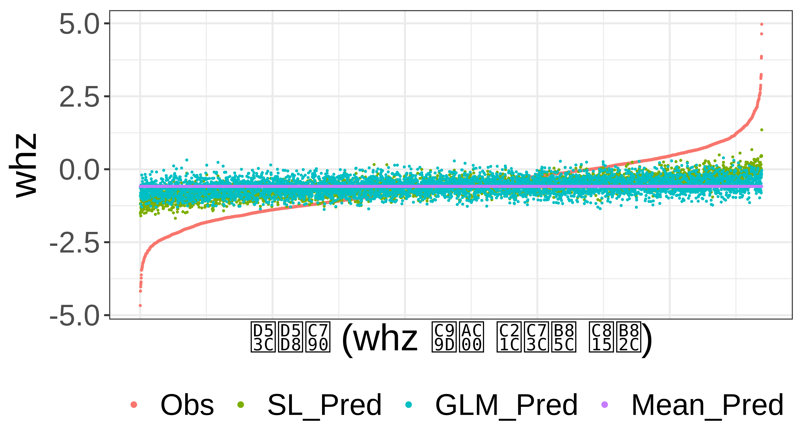
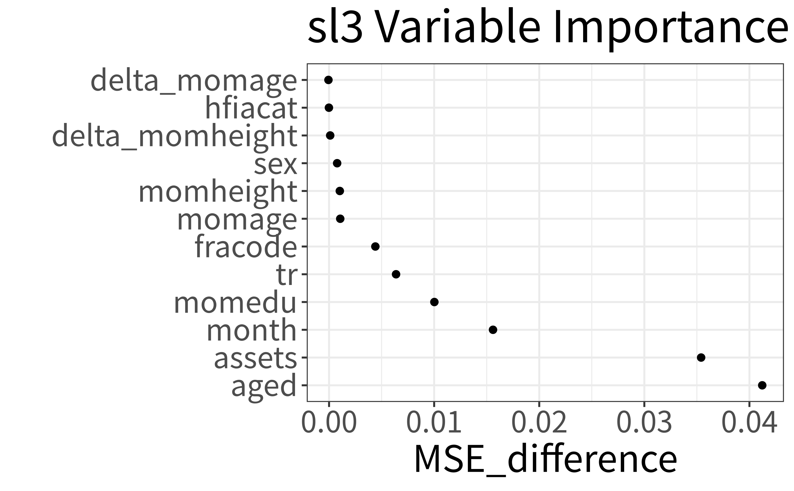

washb_data <- fread(
paste0(
"https://raw.githubusercontent.com/tlverse/tlverse-data/master/",
"wash-benefits/washb_data.csv"
),
stringsAsFactors = TRUE
)7 슈퍼 러닝
Rachael Phillips
Jeremy Coyle, Nima Hejazi, Ivana Malenica, Rachael Phillips, Oleg Sofrygin이 작성한 sl3 R 패키지를 바탕으로 합니다.
Note학습 목표
이 장을 마치면 여러분은 다음을 할 수 있게 됩니다.
참 예측 함수에 의해 최적화되는 성능 메트릭을 선택하거나, 관심 있는 참 예측 함수를 성능 메트릭의 최적화 장치로 정의합니다.
슈퍼 러너에서 고려할 다양한 학습자 세트(“라이브러리”)를 구성합니다. 특히 다음을 할 수 있어야 합니다.
- 튜닝 파라미터를 수정하여 학습자를 사용자 정의합니다.
- 서로 다른 튜닝 파라미터 사양을 가진 동일한 기본 학습자의 변형을 생성합니다.
- 스크리너(screener)와 학습자를 결합하여, 스크리너가 선택한 공변량의 축소된 하위 집합만 고려하는 학습자를 생성합니다.
관심 있는 목적 함수를 최적화하는 메타 학습자(meta-learner)를 지정합니다.
당면한 예측 문제, 실제 세계에서의 분석 용도, 통계 모델, 샘플 크기, 공변량 수 및 이산형 결과의 경우 결과 보급률 측면에서 라이브러리와 메타 학습자를 정당화합니다.
교차 검증된 리스크 추정치 표와 슈퍼 러너 계수로부터 슈퍼 러너 적합 결과를 해석합니다.
7.1 소개
데이터 분석에서 흔한 작업은 예측, 즉 관찰된 데이터를 사용하여 공변량/예측 변수 데이터를 입력으로 받아 예측된 값을 출력하는 함수를 학습하는 것입니다. 때때로 관심 있는 과학적 질문이 인과 효과 추정에 적합한 경우가 있습니다. 예측이 전면에 드러나지 않는 이러한 시나리오에서도 예측 작업은 절차에 내장되어 있습니다. 예를 들어, 평균 치료 효과에 대한 타겟 최소 손실 기반 추정(TMLE)에서 예측 모델링은 결과 회귀 및 성향 점수를 추정하는 데 필수적입니다.
데이터로부터 관계를 모델링하는 데 사용할 수 있는 다양한 전략이 있으며, 우리는 이를 “추정기(estimators)”, “알고리즘(algorithms)”, “학습자(learners)”라는 용어로 혼용하여 부릅니다. 어떤 데이터의 경우 변수들 사이의 복잡한 관계를 파악할 수 있는 알고리즘이 적절한 모델링을 위해 필요합니다. 다른 데이터의 경우 모수적 회귀 학습자가 데이터를 상당히 잘 적합시킬 수도 있습니다. 주어진 데이터셋과 예측 문제에 대해 어떤 접근 방식이 최선일지 미리 아는 것은 일반적으로 불가능합니다.
슈퍼 러너(Super Learner, SL)는 가장 단순한 모수적 회귀부터 가장 복잡한 기계 학습 알고리즘(예: 신경망, 서포트 벡터 머신 등)까지 많은 알고리즘을 고려할 수 있으므로 알고리즘 선택 문제를 해결합니다. 또한 지정된 학습자들이 주어졌을 때 대표본에서 (미지의 오라클만큼) 가능한 한 잘 수행되는 것으로 입증되었습니다 (van der Laan and Dudoit 2003; van der Laan, Dudoit, and Keles 2004; Dudoit and van der Laan 2005; van der Vaart, Dudoit, and van der Laan 2006). SL은 예측 모델링을 위한 완전히 사전 지정되고 유연하며 이론적으로 근거가 있는 접근 방식을 나타냅니다. 이는 매우 작은 표본에서도 다양한 응용 분야에서 적응력 있고 견고함이 입증되었습니다. SL 절차를 설명하는 자세한 내용은 널리 제공되고 있습니다 (Polley and van der Laan 2010; Naimi and Balzer 2018). 풍부하고 다양한 학습자 라이브러리를 지정하는 방법, SL을 위한 성능 메트릭을 선택하는 방법, 교차 검증(CV) 체계를 지정하는 방법을 포함하여 SL을 지정하기 위한 실무적 고려 사항은 프리프린트 논문 (Phillips et al. 2023)에 설명되어 있습니다. 여기서는 SL을 위한 표준 tlverse 소프트웨어 패키지인 sl3를 소개하는 데 집중합니다.
7.2 sl3를 활용한 슈퍼 러닝:
7.2.1 슈퍼 러너를 적합시키는 방법
이 섹션에서는 sl3를 사용하여 SL을 적합시키는 핵심 기능을 설명합니다. 이어지는 섹션에서는 추가적인 sl3 기능을 소개합니다.
sl3로 SL을 적합시키는 과정은 다음 세 단계로 구성됩니다.
make_sl3_Task로 예측 작업(task)을 정의합니다.Lrnr_sl로 SL을 인스턴스화합니다.train으로 작업에 SL을 적합시킵니다.
7.2.1.1 WASH Benefits 데이터셋을 활용한 실행 예제
이 sl3 개요를 안내하기 위해 방글라데시 WASH Benefits 연구를 예제로 사용하겠습니다. 이 연구에서 우리는 사회경제적 지위 변수, 임신 기간, 어머니의 특성을 포함한 공변량/예측 변수로부터 아동 발달 결과인 연령 대비 체중 Z-점수(whz)를 예측하는 데 관심이 있습니다. 이 데이터셋에 대한 자세한 정보는 tlverse 핸북의 “데이터 소개” 장에 설명되어 있습니다.
7.2.1.2 사전 준비
먼저 데이터와 관련 패키지를 R 세션에 로드해야 합니다.
7.2.1.2.1 데이터 로드
WASH Benefits 예제 데이터셋을 로드하기 위해 data.table R 패키지의 fread 함수를 사용합니다.
다음으로 데이터셋의 처음 몇 행을 살펴보겠습니다.
head(washb_data)| whz | tr | fracode | month | aged | sex | momage | momedu | momheight | hfiacat | Nlt18 | Ncomp | watmin | elec | floor | walls | roof | asset_wardrobe | asset_table | asset_chair | asset_khat | asset_chouki | asset_tv | asset_refrig | asset_bike | asset_moto | asset_sewmach | asset_mobile |
|---|---|---|---|---|---|---|---|---|---|---|---|---|---|---|---|---|---|---|---|---|---|---|---|---|---|---|---|
| 0.00 | Control | N05265 | 9 | 268 | male | 30 | Primary (1-5y) | 146.4 | Food Secure | 3 | 11 | 0 | 1 | 0 | 1 | 1 | 0 | 1 | 1 | 1 | 0 | 1 | 0 | 0 | 0 | 0 | 1 |
| -1.16 | Control | N05265 | 9 | 286 | male | 25 | Primary (1-5y) | 148.8 | Moderately Food Insecure | 2 | 4 | 0 | 1 | 0 | 1 | 1 | 0 | 1 | 0 | 1 | 1 | 0 | 0 | 0 | 0 | 0 | 1 |
| -1.05 | Control | N08002 | 9 | 264 | male | 25 | Primary (1-5y) | 152.2 | Food Secure | 1 | 10 | 0 | 0 | 0 | 1 | 1 | 0 | 0 | 1 | 0 | 1 | 0 | 0 | 0 | 0 | 0 | 1 |
| -1.26 | Control | N08002 | 9 | 252 | female | 28 | Primary (1-5y) | 140.2 | Food Secure | 3 | 5 | 0 | 1 | 0 | 1 | 1 | 1 | 1 | 1 | 1 | 0 | 0 | 0 | 1 | 0 | 0 | 1 |
| -0.59 | Control | N06531 | 9 | 336 | female | 19 | Secondary (>5y) | 150.9 | Food Secure | 2 | 7 | 0 | 1 | 0 | 1 | 1 | 1 | 1 | 1 | 1 | 1 | 0 | 0 | 0 | 0 | 0 | 1 |
| -0.51 | Control | N06531 | 9 | 304 | male | 20 | Secondary (>5y) | 154.2 | Severely Food Insecure | 0 | 3 | 1 | 1 | 0 | 1 | 1 | 0 | 0 | 0 | 0 | 1 | 0 | 0 | 0 | 0 | 0 | 1 |
7.2.1.2.2 sl3 소프트웨어 설치 (필요한 경우)
패키지를 설치하기 전에 먼저 R 작업 공간을 비우고 R 세션을 재시작할 것을 권장합니다. RStudio에서는 “Session” 탭에서 “Clear Workspace”를 클릭한 다음, 다시 “Session”에서 “Restart R”을 클릭하여 수행할 수 있습니다.
devtools R 패키지에서 제공하는 install_github 함수를 사용하여 sl3를 설치할 수 있습니다. 여기서는 sl3의 개발 버전(“devel”)을 사용하고 있으므로 아래에 해당 버전을 설치하는 방법을 보여줍니다.
library(devtools)
install_github("tlverse/sl3@devel")R 패키지가 설치되면 R 세션을 다시 시작하는 것이 좋습니다.
7.2.1.2.3 sl3 소프트웨어 로드
sl3가 설치되면 다른 R 패키지처럼 로드할 수 있습니다.
library(sl3)7.2.1.3 1. make_sl3_Task로 예측 작업 정의하기
sl3_Task 객체는 관심 있는 예측 작업을 정의합니다. 이 예제 작업은 방글라데시 WASH Benefits 예제 데이터셋을 사용하여 연령 대비 체중 Z-점수 whz를 예측하기 위한 공변량 함수를 학습하는 것입니다.
# 작업 생성 (즉, washb_data를 사용하여 공변량을 통해 결과 예측)
task <- make_sl3_Task(
data = washb_data,
outcome = "whz",
covariates = c("tr", "fracode", "month", "aged", "sex", "momage", "momedu",
"momheight", "hfiacat", "Nlt18", "Ncomp", "watmin", "elec",
"floor", "walls", "roof", "asset_wardrobe", "asset_table",
"asset_chair", "asset_khat", "asset_chouki", "asset_tv",
"asset_refrig", "asset_bike", "asset_moto", "asset_sewmach",
"asset_mobile")
)
# 작업 검토
task
An sl3 Task with 4695 obs and these nodes:
$covariates
[1] "tr" "fracode" "month" "aged"
[5] "sex" "momage" "momedu" "momheight"
[9] "hfiacat" "Nlt18" "Ncomp" "watmin"
[13] "elec" "floor" "walls" "roof"
[17] "asset_wardrobe" "asset_table" "asset_chair" "asset_khat"
[21] "asset_chouki" "asset_tv" "asset_refrig" "asset_bike"
[25] "asset_moto" "asset_sewmach" "asset_mobile" "delta_momage"
[29] "delta_momheight"
$outcome
[1] "whz"
$id
NULL
$weights
NULL
$offset
NULL
$time
NULLsl3_Task는 예측 문제에서 변수가 수행하는 역할을 추적합니다. 예측 작업과 관련된 추가 정보(예: 관찰 수준 가중치, 오프셋, id, CV 폴드)도 make_sl3_Task에서 지정할 수 있습니다. sl3의 기본 CV 폴드 구조는 \(V=10\)인 \(V\)-폴드 CV(VFCV)입니다. 작업에 id가 지정되면 클러스터링된 \(V=10\) VFCV 체계가 고려됩니다. 결과 유형이 이분형 또는 범주형인 경우 층화 \(V=10\) VFCV 체계가 고려됩니다. origami R 패키지의 make_folds 함수에서 생성된 것과 같은 origami 폴드 객체를 입력하여 다른 CV 체계를 지정할 수 있습니다. 자세한 내용은 교차 검증에 관한 이전 장을 참조하거나 origami의 make_folds 함수 문서를 참조하십시오(예: RStudio에서 origami R 패키지를 로드한 다음 콘솔에 “?make_folds” 입력). sl3_Task에 대한 자세한 내용은 해당 문서(예: R에서 “?sl3_Task” 입력)를 참조하십시오.
팁: task$를 입력한 다음 탭 키를 누르면(RStudio가 아닌 경우 탭을 두 번 누름) task$ 객체에서 접근할 수 있는 모든 활성 및 공용 필드와 메서드를 볼 수 있습니다. 이 $는 객체의 많은 내부에 접근하기 위한 열쇠와 같습니다. 다음 섹션에서는 SL 적합 객체를 파헤치기 위해 $를 사용하는 방법도 살펴보겠습니다. 이를 통해 SL 적합 또는 후보 학습자로부터 예측을 얻고, SL 적합 또는 그 후보들을 검토하며, SL 적합을 요약할 수 있습니다.
7.2.1.4 2. Lrnr_sl로 슈퍼 러너 인스턴스화하기
Lrnr_sl을 생성하려면 최소한 SL이 후보로 고려할 학습자 세트가 필요합니다. 이 알고리즘 세트를 흔히 “라이브러리”라고도 부릅니다. 학습자들을 앙상블하는 알고리즘인 메타 학습자를 지정할 수도 있습니다(단, sl3에 이미 기본값이 설정되어 있으므로 이 부분은 선택 사항입니다). 당면한 예측 작업을 최적화하는 SL 사양(라이브러리 및 메타 학습자 포함)을 맞춤화하기 위한 단계별 가이드는 “슈퍼 러너 지정을 위한 실무적 고려 사항”을 참조하십시오 (Phillips et al. 2023).
학습자들은 그들이 지원하는 기능을 나타내는 속성(properties)을 가지고 있습니다. sl3_list_properties() 함수를 사용하여 적어도 하나의 학습자가 지원하는 모든 속성 목록을 얻을 수 있습니다.
sl3_list_properties()
[1] "binomial" "categorical" "continuous" "cv"
[5] "density" "h2o" "ids" "importance"
[9] "offset" "preprocessing" "sampling" "screener"
[13] "timeseries" "weights" "wrapper" whz는 연속형 결과이므로 sl3_list_learners()를 사용하여 이 결과 유형을 지원하는 학습자를 식별할 수 있습니다.
sl3_list_learners(properties = "continuous")
[1] "Lrnr_arima" "Lrnr_bartMachine"
[3] "Lrnr_bayesglm" "Lrnr_bound"
[5] "Lrnr_caret" "Lrnr_cv_selector"
[7] "Lrnr_dbarts" "Lrnr_earth"
[9] "Lrnr_expSmooth" "Lrnr_ga"
[11] "Lrnr_gam" "Lrnr_gbm"
[13] "Lrnr_glm" "Lrnr_glm_fast"
[15] "Lrnr_glm_semiparametric" "Lrnr_glmnet"
[17] "Lrnr_glmtree" "Lrnr_grf"
[19] "Lrnr_grfcate" "Lrnr_gru_keras"
[21] "Lrnr_gts" "Lrnr_h2o_glm"
[23] "Lrnr_h2o_grid" "Lrnr_hal9001"
[25] "Lrnr_HarmonicReg" "Lrnr_hts"
[27] "Lrnr_lightgbm" "Lrnr_lstm_keras"
[29] "Lrnr_mean" "Lrnr_multiple_ts"
[31] "Lrnr_nnet" "Lrnr_nnls"
[33] "Lrnr_optim" "Lrnr_pkg_SuperLearner"
[35] "Lrnr_pkg_SuperLearner_method" "Lrnr_pkg_SuperLearner_screener"
[37] "Lrnr_polspline" "Lrnr_randomForest"
[39] "Lrnr_ranger" "Lrnr_rpart"
[41] "Lrnr_rugarch" "Lrnr_screener_correlation"
[43] "Lrnr_solnp" "Lrnr_stratified"
[45] "Lrnr_svm" "Lrnr_tsDyn"
[47] "Lrnr_xgboost" 이제 몇 가지 학습자에 대해 알게 되었으니 그중 몇 개를 인스턴스화해 보겠습니다. 아래에서는 각각 주효과 일반화 선형 모델(GLM)과 평균 모델인 Lrnr_glm과 Lrnr_mean을 인스턴스화합니다.
lrn_glm <- Lrnr_glm$new()
lrn_mean <- Lrnr_mean$new()위에서 생성된 두 학습자 모두에 대해 기본 튜닝 파라미터만 사용했습니다. 또한 다양한 설정을 통합하기 위해 학습자의 튜닝 파라미터를 사용자 정의하고, 서로 다른 튜닝 파라미터 사양을 가진 동일한 학습자를 고려할 수 있습니다.
아래에서는 동일한 기본 학습자인 Lrnr_glmnet(즉, 엘라스틱 넷 회귀가 포함된 GLM)을 고려하고 이로부터 두 가지 다른 후보를 생성합니다: L2-페널티/릿지(ridge) 회귀와 L1-페널티/라쏘(lasso) 회귀입니다.
# 페널티 회귀:
lrn_ridge <- Lrnr_glmnet$new(alpha = 0)
lrn_lasso <- Lrnr_glmnet$new(alpha = 1)위에서 Lrnr_glmnet의 alpha를 설정함으로써 이 학습자의 튜닝 파라미터를 사용자 정의했습니다. 아래에서 Lrnr_hal9001을 인스턴스화할 때 여러 튜닝 파라미터(구체적으로 max_degree와 num_knots)를 동시에 수정할 수 있음을 보여줍니다.
관계를 선형 또는 단조성으로 강제하지 않는 학습자들도 더 많이 인스턴스화해 보겠습니다. 이는 후보 세트를 비모수적 학습자를 포함하도록 더욱 다양화합니다.
# 스플라인 회귀:
lrn_polspline <- Lrnr_polspline$new()
lrn_earth <- Lrnr_earth$new()
# 빠른 고도 적응 라쏘(Highly Adaptive Lasso, HAL) 구현
lrn_hal <- Lrnr_hal9001$new(max_degree = 2, num_knots = c(3,2), nfolds = 5)
# 트리 기반 방법
lrn_ranger <- Lrnr_ranger$new()
lrn_xgb <- Lrnr_xgboost$new()SL의 후보 풀을 더욱 다양화하기 위해 일반화 가법 모델(GAM)과 베이지안 GLM도 포함해 보겠습니다.
lrn_gam <- Lrnr_gam$new()
lrn_bayesglm <- Lrnr_bayesglm$new()이제 일련의 학습자들을 인스턴스화했으므로, SL이 그들을 후보로 고려할 수 있도록 묶어야 합니다. sl3에서는 학습자들의 소위 Stack(스택)을 생성하여 이를 수행합니다. Stack은 학습자들을 생성한 것과 같은 방식으로 생성됩니다. Stack 자체가 학습자이기 때문입니다. 이는 다른 모든 학습자와 동일한 인터페이스를 가집니다. 스택이 특별한 이유는 여러 학습자를 한 번에 고려하기 때문입니다. 학습자들을 동시에 훈련시켜 그들의 예측값을 결합하거나 비교할 수 있습니다.
stack <- Stack$new(
lrn_glm, lrn_mean, lrn_ridge, lrn_lasso, lrn_polspline, lrn_earth, lrn_hal,
lrn_ranger, lrn_xgb, lrn_gam, lrn_bayesglm
)
stack
[1] "Lrnr_glm_TRUE" "Lrnr_mean"
[3] "Lrnr_glmnet_deviance_10_0_100_TRUE" "Lrnr_glmnet_deviance_10_1_100_TRUE"
[5] "Lrnr_polspline" "Lrnr_earth_2_3_backward_0_1_0_0"
[7] "Lrnr_hal9001_2_1_c(3, 2)_5" "Lrnr_ranger_500_TRUE_none_1"
[9] "Lrnr_xgboost_20_1" "Lrnr_gam_GCV.Cp"
[11] "Lrnr_bayesglm_TRUE" 스택에 있는 학습자들의 이름이 긴 것을 볼 수 있습니다. 이는 sl3에서 학습자의 기본 명명 방식이 번거롭기 때문입니다. 각 학습자에 대해 sl3의 모든 튜닝 파라미터가 이름에 포함됩니다. 다음 섹션인 “학습자 명명”에서 사용자가 원하는 대로 학습자 이름을 짓는 몇 가지 방법을 보여줍니다.
이제 학습자 세트를 인스턴스화하고 함께 쌓았으므로 SL을 인스턴스화할 준비가 되었습니다. 연속형 결과에 대해 비음수 최소 제곱(Non-Negative Least Squares, NNLS) 회귀(Lrnr_nnls)인 기본 메타 학습자를 사용하겠습니다. 설명을 위해 아래에서 명시적으로 지정해 보겠습니다.
sl <- Lrnr_sl$new(learners = stack, metalearner = Lrnr_nnls$new())7.2.1.5 3. train으로 예측 작업에 슈퍼 러너 적합시키기
예측 작업에 SL을 적합시키는 마지막 단계는 train을 호출하고 작업을 제공하는 것입니다. train을 호출하기 전에 결과가 재현 가능하도록 난수 생성기를 설정하고 시간도 측정해 보겠습니다.
start_time <- proc.time() # 시작 시간
set.seed(4197)
sl_fit <- sl$train(task = task)
Error in fit_object$training_offset <- task$has_node("offset") :
ALTLIST classes must provide a Set_elt method [class: XGBAltrepPointerClass,
pkg: xgboost]
Error in fit_object$training_offset <- task$has_node("offset") :
ALTLIST classes must provide a Set_elt method [class: XGBAltrepPointerClass,
pkg: xgboost]
Error in fit_object$training_offset <- task$has_node("offset") :
ALTLIST classes must provide a Set_elt method [class: XGBAltrepPointerClass,
pkg: xgboost]
Error in fit_object$training_offset <- task$has_node("offset") :
ALTLIST classes must provide a Set_elt method [class: XGBAltrepPointerClass,
pkg: xgboost]
Error in fit_object$training_offset <- task$has_node("offset") :
ALTLIST classes must provide a Set_elt method [class: XGBAltrepPointerClass,
pkg: xgboost]
Error in fit_object$training_offset <- task$has_node("offset") :
ALTLIST classes must provide a Set_elt method [class: XGBAltrepPointerClass,
pkg: xgboost]
Error in fit_object$training_offset <- task$has_node("offset") :
ALTLIST classes must provide a Set_elt method [class: XGBAltrepPointerClass,
pkg: xgboost]
Error in fit_object$training_offset <- task$has_node("offset") :
ALTLIST classes must provide a Set_elt method [class: XGBAltrepPointerClass,
pkg: xgboost]
Error in fit_object$training_offset <- task$has_node("offset") :
ALTLIST classes must provide a Set_elt method [class: XGBAltrepPointerClass,
pkg: xgboost]
Error in fit_object$training_offset <- task$has_node("offset") :
ALTLIST classes must provide a Set_elt method [class: XGBAltrepPointerClass,
pkg: xgboost]
Error in fit_object$training_offset <- task$has_node("offset") :
ALTLIST classes must provide a Set_elt method [class: XGBAltrepPointerClass,
pkg: xgboost]
runtime_sl_fit <- proc.time() - start_time # 종료 시간 - 시작 시간 = 실행 시간
runtime_sl_fit
user system elapsed
188.410 1.072 176.130 SL을 적합시키는 데 176.1초(2.9분)가 걸렸습니다.
7.2.1.6 요약
이 섹션에서는 sl3로 SL을 적합시키는 핵심 기능을 설명했습니다. 이는 다음 세 단계로 구성됩니다.
make_sl3_Task로 예측 작업 정의하기Lrnr_sl로 SL 인스턴스화하기train으로 작업에 SL 적합시키기
이 예제는 시연만을 목적으로 했습니다. 당면한 예측 작업에 잘 지정된 SL을 구축하기 위한 단계별 가이드는 Phillips et al. (2023) 를 참조하십시오.
7.3 추가적인 sl3 주제:
7.3.1 예측 얻기
7.3.1.1 슈퍼 러너 및 후보 학습자 예측
위에서 적합시킨 SL 객체인 sl_fit을 활용하여 각 피험자에 대한 SL의 예측 whz 값을 얻겠습니다.
sl_preds <- sl_fit$predict(task = task)
head(sl_preds)
[1] -0.5673 -0.8725 -0.6891 -0.7376 -0.6301 -0.6582SL의 후보 학습자로부터 예측값을 얻을 수도 있습니다. 아래에서는 GLM 학습자에 대한 예측을 얻습니다.
glm_preds <- sl_fit$learner_fits$Lrnr_glm_TRUE$predict(task = task)
head(glm_preds)
[1] -0.7262 -0.9361 -0.7085 -0.6492 -0.7013 -0.8462SL에 대한 예측값은 후보 학습자들이 전체 분석 데이터셋, 즉 make_sl3_Task에 data로 제공된 모든 데이터에 대해 적합된 소위 “전체 적합(full fits)”에 해당한다는 점에 유의하십시오. Phillips et al. (2023) 의 그림 2는 SL 적합 절차에 대한 시각적 개요를 제공합니다.
# 후보 학습자 전체 적합에 직접 접근하여 거기서 동일한 "전체 적합" 후보 예측을 얻을 수도 있습니다.
# (오버플로를 방지하기 위해 이를 두 줄로 나눕니다)
stack_full_fits <- sl_fit$fit_object$full_fit$learner_fits$Stack$learner_fits
glm_preds_full_fit <- stack_full_fits$Lrnr_glm_TRUE$predict(task)
# 둘이 동일한지 확인
identical(glm_preds, glm_preds_full_fit)
[1] TRUE아래에서는 관찰된 whz 값과 SL, GLM 및 평균에 대한 예측 whz 값을 시각화합니다.
# 관찰된 결과 값과 예측된 결과 값의 표를 만들고 관찰된 값에 따라 정렬합니다.
df_plot <- data.table(
Obs = washb_data[["whz"]], SL_Pred = sl_preds, GLM_Pred = glm_preds,
Mean_Pred = sl_fit$learner_fits$Lrnr_mean$predict(task)
)
df_plot <- df_plot[order(df_plot$Obs), ] head(df_plot)| Obs | SL_Pred | GLM_Pred | Mean_Pred |
|---|---|---|---|
| -4.67 | -1.509 | -0.9096 | -0.5861 |
| -4.18 | -1.191 | -0.6391 | -0.5861 |
| -4.17 | -1.169 | -0.8098 | -0.5861 |
| -4.03 | -1.467 | -0.8960 | -0.5861 |
| -3.95 | -1.595 | -1.1952 | -0.5861 |
| -3.90 | -1.303 | -0.9849 | -0.5861 |
# 관찰값과 예측값을 플로팅할 수 있도록 표를 녹입니다(melt).
df_plot$id <- seq(1:nrow(df_plot))
df_plot_melted <- melt(
df_plot, id.vars = "id",
measure.vars = c("Obs", "SL_Pred", "GLM_Pred", "Mean_Pred")
)
library(ggplot2)
ggplot(df_plot_melted, aes(id, value, color = variable)) +
geom_point(size = 0.1) +
labs(x = "피험자 (whz 증가 순으로 정렬)",
y = "whz") +
theme(legend.position = "bottom", legend.title = element_blank(),
axis.text.x = element_blank(), axis.ticks.x = element_blank()) +
guides(color = guide_legend(override.aes = list(size = 1)))
7.3.1.2 교차 검증된 예측
후보 학습자들에 대한 교차 검증(CV) 예측값을 얻을 수도 있습니다. 몇 가지 다른 방식으로 이를 수행할 수 있습니다.
# 후보 학습자들에 대한 CV 예측을 얻는 한 가지 방법
cv_preds_option1 <- sl_fit$fit_object$cv_fit$predict_fold(
task = task, fold_number = "validation"
)
# 후보 학습자들에 대한 CV 예측을 얻는 또 다른 방법
cv_preds_option2 <- sl_fit$fit_object$cv_fit$predict(task = task)
# 둘이 동일한지 확인
identical(cv_preds_option1, cv_preds_option2)
[1] TRUEhead(cv_preds_option1)| Lrnr_glm_TRUE | Lrnr_mean | Lrnr_glmnet_deviance_10_0_100_TRUE | Lrnr_glmnet_deviance_10_1_100_TRUE | Lrnr_polspline | Lrnr_earth_2_3_backward_0_1_0_0 | Lrnr_hal9001_2_1_c(3, 2)_5 | Lrnr_ranger_500_TRUE_none_1 | Lrnr_gam_GCV.Cp | Lrnr_bayesglm_TRUE |
|---|---|---|---|---|---|---|---|---|---|
| -0.7453 | -0.5931 | -0.6915 | -0.6892 | -0.7250 | -0.7156 | -0.6946 | -0.7797 | -0.7244 | -0.7452 |
| -0.9447 | -0.5865 | -0.8215 | -0.7872 | -0.8449 | -0.8352 | -0.8268 | -0.7595 | -0.9324 | -0.9445 |
| -0.6494 | -0.5931 | -0.7015 | -0.7242 | -0.7140 | -0.6089 | -0.7045 | -0.5783 | -0.6111 | -0.6495 |
| -0.6211 | -0.5846 | -0.6210 | -0.6576 | -0.6525 | -0.6916 | -0.6843 | -0.5196 | -0.5910 | -0.6214 |
| -0.7647 | -0.5846 | -0.6595 | -0.7025 | -0.7001 | -0.6969 | -0.6788 | -0.6336 | -0.7975 | -0.7649 |
| -0.8873 | -0.5763 | -0.7893 | -0.6866 | -0.7125 | -0.4770 | -0.6897 | -0.7833 | -0.9132 | -0.8872 |
7.3.1.2.1 predict_fold
CV 예측을 얻는 첫 번째 옵션인 cv_preds_option1은 predict_fold 함수를 사용하여 모든 폴드에 걸친 검증 세트 예측을 얻었습니다. 이 함수는 Lrnr_sl에 있는 것과 같이 sl3에서 교차 검증된 학습자 적합에 대해서만 존재합니다. predict_fold에 fold_number = "validation"을 제공하는 것 외에도, 전체 데이터셋(즉, make_sl3_Task에 제공된 모든 데이터)에 적합된 학습자로부터 예측을 얻기 위해 fold_number = "full"로 설정할 수 있습니다. 예를 들어, 위에서 계산한 glm_preds를 fold_number = "full"로 설정하여 얻을 수 있음을 아래에서 보여줍니다.
full_fit_preds <- sl_fit$fit_object$cv_fit$predict_fold(
task = task, fold_number = "full"
)
glm_full_fit_preds <- full_fit_preds$Lrnr_glm_TRUE
# 둘이 동일한지 확인
identical(glm_preds, glm_full_fit_preds)
[1] TRUE또한 predict_fold의 fold_number 인자에 1과 CV 폴드 수 사이의 특정 정수를 제공할 수도 있습니다. 이 기능의 예는 다음 부분에서 보여줍니다.
7.3.1.2.2 수동으로 교차 검증된 예측 얻기
각 폴드에 직접 접근한 다음, (각 폴드의 훈련 세트에 대해 훈련된) 적합된 후보 학습자를 사용하여 (훈련에서 보지 못한) 검증 세트 결과를 예측함으로써 CV 예측을 “수동으로” 얻을 수 있습니다.
##### 수동 CV 예측 #####
# 각 폴드 i에 대해 검증 세트 예측을 얻습니다.
cv_preds_list <- lapply(seq_along(task$folds), function(i){
# 폴드 i에 대한 검증 데이터셋 가져오기
v_data <- task$data[task$folds[[i]]$validation_set, ]
# 폴드 i의 검증 데이터셋에서 관찰된 결과 가져오기
v_outcomes <- v_data[["whz"]]
# 폴드 i의 검증 데이터셋을 데이터로 사용하여 예측을 위한 작업 생성 (나머지는 동일하게 유지)
v_task <- make_sl3_Task(covariates = task$nodes$covariates, data = v_data)
# 폴드 i의 훈련 데이터셋에 훈련된 후보들을 사용하여 폴드 i의 검증 데이터셋에 대한 예측 결과 얻기
v_preds <- sl_fit$fit_object$cv_fit$predict_fold(
task = v_task, fold_number = i
)
# 참고: v_preds는 후보 학습자 예측값의 행렬이며, 행의 수는 폴드 i의 검증 데이터셋에 있는 관찰값 수이고
# 열의 수는 후보 학습자 수입니다 (실패한 학습자 제외).
# v_preds를 얻는 동일한 방법으로, 이 장의 나중 부분에서 수동으로 cv 리스크를 계산할 때 사용됩니다.
# v_preds <- sl_fit$fit_object$cv_fit$fit_object$fold_fits[[i]]$predict(
# task = v_task
# )
# 또한 나중에 CV 예측을 재정렬하고 위에서 얻은 것과 동일한지 확인할 수 있도록 폴드 i의 검증 세트에 대한 행 인덱스를 반환합니다.
return(list("v_preds" = v_preds, "v_index" = task$folds[[i]]$validation_set))
})
# 모든 폴드에 걸친 검증 세트 예측 추출
cv_preds_byhand <- do.call(rbind, lapply(cv_preds_list, "[[", "v_preds"))
# 모든 폴드에 걸친 검증 세트 관찰값의 인덱스 추출
# 그런 다음 데이터의 순서와 일치하도록 cv_preds_byhand를 재정렬
row_index_in_data <- unlist(lapply(cv_preds_list, "[[", "v_index"))
cv_preds_byhand_ordered <- cv_preds_byhand[order(row_index_in_data), ]
# 이제 둘이 동일한지 확인
identical(cv_preds_option1, cv_preds_byhand_ordered)
[1] TRUE7.3.1.3 새로운 데이터에 대한 예측
새로운 데이터에 대한 예측값을 얻으려면 새로운 데이터로부터 새로운 sl3_Task를 생성해야 합니다. 또한 이 새로운 sl3_Task의 공변량은 훈련용 sl3_Task의 공변량과 동일해야 합니다. 예로서, 적합된 SL을 사용하여 예측된 연령 대비 체중 Z-점수 값을 얻고자 하는 새로운 공변량 데이터 washb_data_new가 있다고 가정해 봅시다.
# `washb_data_new`가 존재하지 않으므로 이 코드 청크는 평가하지 않습니다.
prediction_task <- make_sl3_Task(
data = washb_data_new, # 예측을 위한 새로운 데이터가 있다고 가정
covariates = c("tr", "fracode", "month", "aged", "sex", "momage", "momedu",
"momheight", "hfiacat", "Nlt18", "Ncomp", "watmin", "elec",
"floor", "walls", "roof", "asset_wardrobe", "asset_table",
"asset_chair", "asset_khat", "asset_chouki", "asset_tv",
"asset_refrig", "asset_bike", "asset_moto", "asset_sewmach",
"asset_mobile")
)
sl_preds_new_task <- sl_fit$predict(task = prediction_task)7.3.1.4 반사실적 예측 (Counterfactual predictions)
반사실적 예측은 관심 있는 중재 하에서의 예측값입니다. 위에서 본 것처럼 새로운 데이터를 사용하여 훈련 작업과 일치하는 공변량을 가진 sl3_Task를 생성함으로써 새로운 데이터에 대한 예측값을 얻을 수 있음을 기억하십시오. 방글라데시 WASH Benefits 연구를 활용한 예로, 모든 피험자의 치료(tr)를 영양, 물, 위생 및 손 씻기 요법으로 설정하는 중재 하에서의 연령 대비 체중 Z-점수(whz) 결과에 대한 예측을 얻고 싶다고 가정해 봅시다.
먼저 데이터셋의 복사본을 생성해야 합니다. 그런 다음 복사된 데이터셋에서 tr에 중재를 가하고, 복사된 데이터와 훈련 작업과 동일한 공변량을 사용하여 새로운 sl3_Task를 생성하고, 마지막으로 적합된 SL(이전 섹션에서 sl_fit으로 명명함)로부터 예측값을 얻습니다.
### 1. 데이터 복사
tr_intervention_data <- data.table::copy(washb_data)
### 2. 복사된 데이터셋에서 중재 정의
tr_intervention <- rep("Nutrition + WSH", nrow(washb_data))
# 참고: 범주형 변수(예: "tr")에 중재를 가할 때는 중재를 범주형 변수(즉, 요인(factor))로 정의해야 합니다.
# 또한 요인의 모든 수준이 중재에 나타나지는 않더라도, 이 요인이 관찰된 데이터에 존재하는 모든 수준을 반영하도록 해야 합니다.
tr_levels <- levels(washb_data[["tr"]])
tr_levels
[1] "Control" "Handwashing" "Nutrition" "Nutrition + WSH"
[5] "Sanitation" "WSH" "Water"
tr_intervention <- factor(tr_intervention, levels = tr_levels)
tr_intervention_data[,"tr" := tr_intervention, ]
### 3. 새로운 sl3_Task 생성
# 이 새로운 작업은 예측을 얻기 위해서만 사용하므로 결과(outcome)를 지정할 필요가 없음에 유의하십시오.
tr_intervention_task <- make_sl3_Task(
data = tr_intervention_data,
covariates = c("tr", "fracode", "month", "aged", "sex", "momage", "momedu",
"momheight", "hfiacat", "Nlt18", "Ncomp", "watmin", "elec",
"floor", "walls", "roof", "asset_wardrobe", "asset_table",
"asset_chair", "asset_khat", "asset_chouki", "asset_tv",
"asset_refrig", "asset_bike", "asset_moto", "asset_sewmach",
"asset_mobile")
)
### 4. 관심 중재 하에서의 예측값 얻기
# 모든 피험자가 "Nutrition + WSH"와 동일한 "tr"을 받았을 경우 "whz"가 어떠했을지에 대한 SL 예측
counterfactual_pred <- sl_fit$predict(tr_intervention_task)모든 피험자가 동일한 중재를 받는 이러한 유형의 중재를 “정적(static)”이라고 합니다. 피험자의 특성에 따라 달라지는 중재를 “동적(dynamic)”이라고 합니다. 예를 들어, 피험자가 냉장고를 가지고 있으면 원하는(영양, 물, 위생 및 손 씻기) 요법을 설정하고, 그렇지 않으면 영양이 제외된(물, 위생 및 손 씻기) 요법을 설정하는 중재를 고려할 수 있습니다.
dynamic_tr_intervention_data <- data.table::copy(washb_data)
dynamic_tr_intervention <- ifelse(
washb_data[["asset_refrig"]] == 1, "Nutrition + WSH", "WSH"
)
dynamic_tr_intervention <- factor(dynamic_tr_intervention, levels = tr_levels)
dynamic_tr_intervention_data[,"tr" := dynamic_tr_intervention, ]
dynamic_tr_intervention_task <- make_sl3_Task(
data = dynamic_tr_intervention_data,
covariates = c("tr", "fracode", "month", "aged", "sex", "momage", "momedu",
"momheight", "hfiacat", "Nlt18", "Ncomp", "watmin", "elec",
"floor", "walls", "roof", "asset_wardrobe", "asset_table",
"asset_chair", "asset_khat", "asset_chouki", "asset_tv",
"asset_refrig", "asset_bike", "asset_moto", "asset_sewmach",
"asset_mobile")
)
### 4. 관심 중재 하에서의 예측값 얻기
# 냉장고가 있으면 "Nutrition + WSH"와 동일한 "tr"을 받고, 냉장고가 없으면 "WSH"를 받았을 경우 각 피험자의 "whz"에 대한 SL 예측
counterfactual_pred <- sl_fit$predict(dynamic_tr_intervention_task)7.3.2 슈퍼 러너 적합 요약하기
7.3.2.1 슈퍼 러너 계수 / 적합된 메타 학습자 요약
메타 학습자가 학습자들의 함수를 어떻게 생성했는지 몇 가지 방식으로 확인할 수 있습니다. 예제 분석에서는 연속형 결과에 대한 기본 메타 학습자인 NNLS를 고려했습니다. 단순히 가중치 조합을 학습하는 메타 학습자의 경우 계수를 검토할 수 있습니다.
round(sl_fit$coefficients, 3)
Lrnr_glm_TRUE Lrnr_mean
0.000 0.000
Lrnr_glmnet_deviance_10_0_100_TRUE Lrnr_glmnet_deviance_10_1_100_TRUE
0.090 0.000
Lrnr_polspline Lrnr_earth_2_3_backward_0_1_0_0
0.161 0.398
Lrnr_hal9001_2_1_c(3, 2)_5 Lrnr_ranger_500_TRUE_none_1
0.000 0.350
Lrnr_gam_GCV.Cp Lrnr_bayesglm_TRUE
0.000 0.000 메타 학습자의 적합 객체에 직접 접근하여 계수를 검토할 수도 있습니다.
metalrnr_fit <- sl_fit$fit_object$cv_meta_fit$fit_object
round(metalrnr_fit$coefficients, 3)
Lrnr_glm_TRUE Lrnr_mean
0.000 0.000
Lrnr_glmnet_deviance_10_0_100_TRUE Lrnr_glmnet_deviance_10_1_100_TRUE
0.090 0.000
Lrnr_polspline Lrnr_earth_2_3_backward_0_1_0_0
0.161 0.398
Lrnr_hal9001_2_1_c(3, 2)_5 Lrnr_ranger_500_TRUE_none_1
0.000 0.350
Lrnr_gam_GCV.Cp Lrnr_bayesglm_TRUE
0.000 0.000 메타 학습자 적합 객체에 직접 접근하는 것은 단순한 주효과 회귀 계수로 정의되지 않는 더 복잡한 메타 학습자(예: 비모수적 메타 학습자)의 경우에도 유용합니다.
7.3.2.2 교차 검증된 예측 성능
SL에 포함된 각 학습자의 교차 검증(CV) 예측 성능, 즉 CV 리스크 표를 얻을 수 있습니다. 아래에서는 평가 함수로 제곱 오차 손실을 사용하며, 이는 예측 성능을 요약하는 메트릭으로서 평균 제곱 오차(MSE)와 같습니다. MSE를 사용하는 이유는 WASH Benefits 예제에서 우리가 학습하고 있는 예측 함수인 조건부 평균을 추정하는 데 유효한 메트릭이기 때문입니다. 적절한 성능 메트릭 선택에 대한 자세한 내용은 Phillips et al. (2023) 를 참조하십시오.
cv_risk_table <- sl_fit$cv_risk(eval_fun = loss_squared_error)cv_risk_table[,c(1:3)]| learner | coefficients | MSE |
|---|---|---|
| Lrnr_glm_TRUE | 0.0000 | 1.022 |
| Lrnr_mean | 0.0000 | 1.065 |
| Lrnr_glmnet_deviance_10_0_100_TRUE | 0.0900 | 1.016 |
| Lrnr_glmnet_deviance_10_1_100_TRUE | 0.0000 | 1.015 |
| Lrnr_polspline | 0.1615 | 1.016 |
| Lrnr_earth_2_3_backward_0_1_0_0 | 0.3982 | 1.013 |
| Lrnr_hal9001_2_1_c(3, 2)_5 | 0.0000 | 1.017 |
| Lrnr_ranger_500_TRUE_none_1 | 0.3504 | 1.014 |
| Lrnr_gam_GCV.Cp | 0.0000 | 1.024 |
| Lrnr_bayesglm_TRUE | 0.0000 | 1.022 |
7.3.2.2.1 수동으로 교차 검증된 예측 성능 얻기
수동으로 CV 예측을 얻었던 것과 비슷하게, 절차를 노출하는 방식으로 CV 성능/리스크를 계산할 수도 있습니다. 구체적으로, 이는 각 폴드에 접근한 다음, (각 폴드의 훈련 세트에 대해 훈련된) 적합된 후보 학습자를 사용하여 (훈련에서 보지 못한) 검증 세트 결과를 예측하고 예측 성능(즉, 리스크)을 측정함으로써 수행됩니다. 그런 다음 각 후보 학습자의 폴드별 리스크를 모든 폴드에 대해 평균하여 CV 리스크를 얻습니다. cv_risk 함수는 내부적으로 이 모든 과정을 수행하며, 아래에 수동으로 수행하는 법을 보여줍니다. 이는 CV 리스크와 그것이 어떻게 계산되는지 이해하는 데 도움이 될 수 있습니다.
##### 수동 CV 리스크 #####
# 각 폴드 i에 대해 각 후보의 예측 성능/리스크를 얻습니다.
cv_risks_list <- lapply(seq_along(task$folds), function(i){
# 폴드 i에 대한 검증 데이터셋 가져오기
v_data <- task$data[task$folds[[i]]$validation_set, ]
# 폴드 i의 검증 데이터셋에서 관찰된 결과 가져오기
v_outcomes <- v_data[["whz"]]
# 폴드 i의 검증 데이터셋을 데이터로 사용하여 예측을 위한 작업 생성 (나머지는 동일하게 유지)
v_task <- make_sl3_Task(covariates = task$nodes$covariates, data = v_data)
# 폴드 i의 훈련 데이터셋에 훈련된 후보들을 사용하여 폴드 i의 검증 데이터셋에 대한 예측 결과 얻기
v_preds <- sl_fit$fit_object$cv_fit$fit_object$fold_fits[[i]]$predict(v_task)
# 참고: v_preds는 후보 학습자 예측값의 행렬이며, 행의 수는 폴드 i의 검증 데이터셋에 있는 관찰값 수이고
# 열의 수는 후보 학습자 수입니다 (실패한 학습자 제외).
# 각 후보에 대해 폴드 i의 예측 성능 계산
eval_function <- loss_squared_error # 조건부 평균 추정에 유효함
v_losses <- apply(v_preds, 2, eval_function, v_outcomes)
cv_risks <- colMeans(v_losses)
return(cv_risks)
})
# 각 후보에 대해 모든 폴드에 걸친 예측 성능 평균 내기
cv_risks_byhand <- colMeans(do.call(rbind, cv_risks_list))
cv_risk_table_byhand <- data.table(
learner = names(cv_risks_byhand), MSE = cv_risks_byhand
)
# 수동 계산과 함수 출력이 동일한지 확인 (소수점 넷째 자리에서 반올림하여 미세한 차이 무시)
identical(
round(cv_risk_table_byhand$MSE,4), round(as.numeric(cv_risk_table$MSE),4)
)
[1] FALSE7.3.2.3 교차 검증된 슈퍼 러너 (Cross-validated Super Learner)
위의 CV 리스크 표를 보면 SL이 나열되지 않은 것을 알 수 있습니다. 이는 우리가 SL을 교차 검증하거나 다른 SL의 후보로 포함하지 않는 한 SL에 대한 CV 리스크를 갖지 못하기 때문입니다. 후자는 다음 하위 섹션에서 보여줍니다. 아래에서는 cv_sl 함수를 사용하여 SL에 대한 CV 리스크 추정치를 얻는 방법을 보여줍니다. 이전과 마찬가지로 sl$train을 호출할 때 결과가 재현 가능하도록 난수 생성기를 설정하고 시간도 측정하겠습니다.
start_time <- proc.time()
set.seed(569)
cv_sl_fit <- cv_sl(lrnr_sl = sl_fit, task = task, eval_fun = loss_squared_error)
runtime_cv_sl_fit <- proc.time() - start_time
runtime_cv_sl_fit user system elapsed
2792.6 159.6 3051.4 CV SL을 적합시키는 데 3051.4초(50.9분)가 걸렸습니다.
cv_sl_fit$cv_risk[,c(1:3)]| learner | MSE | se |
|---|---|---|
| Lrnr_glm_TRUE | 1.022 | 0.0240 |
| Lrnr_mean | 1.065 | 0.0250 |
| Lrnr_glmnet_NULL_deviance_10_0_100_TRUE | 1.017 | 0.0237 |
| Lrnr_glmnet_NULL_deviance_10_1_100_TRUE | 1.014 | 0.0236 |
| Lrnr_polspline | 1.016 | 0.0237 |
| Lrnr_earth_2_3_backward_0_1_0_0 | 1.013 | 0.0235 |
| Lrnr_hal9001_2_1_c(3, 2)_5 | 1.018 | 0.0237 |
| Lrnr_ranger_500_TRUE_none_1 | 1.014 | 0.0236 |
| Lrnr_xgboost_20_1 | 1.079 | 0.0248 |
| Lrnr_gam_NULL_NULL_GCV.Cp | 1.024 | 0.0239 |
| Lrnr_bayesglm_TRUE | 1.022 | 0.0240 |
| SuperLearner | 1.007 | 0.0234 |
SL의 CV 리스크는 0.0234이며, 이는 모든 후보의 CV 리스크보다 낮습니다.
각 폴드에서 SL의 계수를 통해 폴드 간에 SL 적합이 어떻게 변했는지 확인할 수 있습니다.
round(cv_sl_fit$coef, 3)| fold | Lrnr_glm_TRUE | Lrnr_mean | Lrnr_glmnet_NULL_deviance_10_0_100_TRUE | Lrnr_glmnet_NULL_deviance_10_1_100_TRUE | Lrnr_polspline | Lrnr_earth_2_3_backward_0_1_0_0 | Lrnr_hal9001_2_1_c(3, 2)_5 | Lrnr_ranger_500_TRUE_none_1 | Lrnr_xgboost_20_1 | Lrnr_gam_NULL_NULL_GCV.Cp | Lrnr_bayesglm_TRUE |
|---|---|---|---|---|---|---|---|---|---|---|---|
| 1 | 0.000 | 0 | 0.047 | 0.000 | 0.243 | 0.253 | 0.000 | 0.456 | 0.000 | 0.000 | 0 |
| 2 | 0.000 | 0 | 0.000 | 0.257 | 0.161 | 0.000 | 0.071 | 0.473 | 0.038 | 0.000 | 0 |
| 3 | 0.000 | 0 | 0.030 | 0.000 | 0.079 | 0.175 | 0.147 | 0.415 | 0.000 | 0.154 | 0 |
| 4 | 0.050 | 0 | 0.000 | 0.459 | 0.000 | 0.111 | 0.020 | 0.360 | 0.000 | 0.000 | 0 |
| 5 | 0.000 | 0 | 0.075 | 0.275 | 0.000 | 0.315 | 0.000 | 0.318 | 0.000 | 0.017 | 0 |
| 6 | 0.025 | 0 | 0.248 | 0.000 | 0.110 | 0.351 | 0.000 | 0.267 | 0.000 | 0.000 | 0 |
| 7 | 0.000 | 0 | 0.000 | 0.236 | 0.114 | 0.084 | 0.139 | 0.406 | 0.000 | 0.020 | 0 |
| 8 | 0.189 | 0 | 0.007 | 0.000 | 0.196 | 0.029 | 0.207 | 0.372 | 0.000 | 0.000 | 0 |
| 9 | 0.113 | 0 | 0.000 | 0.103 | 0.106 | 0.129 | 0.000 | 0.548 | 0.000 | 0.000 | 0 |
| 10 | 0.000 | 0 | 0.000 | 0.185 | 0.000 | 0.154 | 0.000 | 0.661 | 0.000 | 0.000 | 0 |
7.3.2.4 슈퍼 러너의 리비어(Revere) 교차 검증 예측 성능
소위 “리비어(revere)”를 사용하여 SL에 대한 부분 CV 리스크를 얻을 수도 있습니다. 여기서 SL 후보 학습자 적합은 교차 검증되지만 메타 학습자 적합은 교차 검증되지 않습니다. 이미 후보들의 CV 적합 결과가 있으므로 SL의 리비어-CV 성능/리스크 추정치를 계산하는 데 거의 추가 시간이 걸리지 않습니다. 그렇다고 해서 리비어-CV SL 성능이 실제 CV SL에서 얻은 성능을 대체할 수 있다는 것은 아닙니다. 리비어는 NNLS와 같이 메타 학습자가 단순한 모델일 때 SL의 CV 리스크에 대한 대략적인 하한선을 매우 빠르게 검토하는 데 사용될 수 있습니다. cv_risk에서 get_sl_revere_risk = TRUE로 설정하여 리비어 기반 CV 리스크 추정치를 출력할 수 있습니다.
cv_risk_w_sl_revere <- sl_fit$cv_risk(
eval_fun = loss_squared_error, get_sl_revere_risk = TRUE
)cv_risk_w_sl_revere[,c(1:3)]| learner | coefficients | MSE |
|---|---|---|
| Lrnr_glm_TRUE | 0.0000 | 1.022 |
| Lrnr_mean | 0.0000 | 1.065 |
| Lrnr_glmnet_deviance_10_0_100_TRUE | 0.0900 | 1.016 |
| Lrnr_glmnet_deviance_10_1_100_TRUE | 0.0000 | 1.015 |
| Lrnr_polspline | 0.1615 | 1.016 |
| Lrnr_earth_2_3_backward_0_1_0_0 | 0.3982 | 1.013 |
| Lrnr_hal9001_2_1_c(3, 2)_5 | 0.0000 | 1.017 |
| Lrnr_ranger_500_TRUE_none_1 | 0.3504 | 1.014 |
| Lrnr_gam_GCV.Cp | 0.0000 | 1.024 |
| Lrnr_bayesglm_TRUE | 0.0000 | 1.022 |
| SuperLearner | NA | 1.003 |
7.3.2.4.1 수동으로 슈퍼 러너의 리비어 교차 검증 예측 성능 얻기
아래에 SL의 리비어-CV 예측 성능/리스크를 수동으로 계산하는 법을 보여줍니다. 이는 리비어를 이해하고 그것이 SL에 대한 부분 CV 성능/리스크 추정치를 얻는 데 어떻게 사용될 수 있는지 이해하는 데 도움이 될 것입니다.
##### 수동 리비어 기반 리스크 #####
# 각 폴드 i에 대해 SL의 예측 성능/리스크를 얻습니다.
sl_revere_risk_list <- lapply(seq_along(task$folds), function(i){
# 폴드 i에 대한 검증 데이터셋 가져오기
v_data <- task$data[task$folds[[i]]$validation_set, ]
# 폴드 i의 검증 데이터셋에서 관찰된 결과 가져오기
v_outcomes <- v_data[["whz"]]
# 폴드 i의 검증 데이터셋을 데이터로 사용하여 예측을 위한 작업 생성 (나머지는 동일하게 유지)
v_task <- make_sl3_Task(
covariates = task$nodes$covariates, data = v_data
)
# 폴드 i의 훈련 데이터셋에 훈련된 후보들을 사용하여 폴드 i의 검증 데이터셋에 대한 예측 결과 얻기
v_preds <- sl_fit$fit_object$cv_fit$fit_object$fold_fits[[i]]$predict(v_task)
# 메타 레벨 작업 생성 (sl로 예측하기 위함)
v_meta_task <- make_sl3_Task(
covariates = sl_fit$fit_object$cv_meta_task$nodes$covariates,
data = v_preds
)
# 적합된 메타 학습자인 cv_meta_fit을 사용하여 폴드 i의 메타 레벨 데이터셋에 대한 예측 결과 얻기
sl_revere_v_preds <- sl_fit$fit_object$cv_meta_fit$predict(task=v_meta_task)
# 참고: cv_meta_fit은 메타 레벨 데이터셋에 대해 훈련되었으며, 이 데이터셋은 모든 폴드에 걸친 후보들의 cv 예측값과 검증 데이터셋 결과를 포함합니다.
# 따라서 cv_meta_fit은 폴드 i의 검증 데이터셋 결과를 이미 본 상태입니다.
# 폴드 i에 대한 SL의 예측 성능 계산
eval_function <- loss_squared_error # 조건부 평균 추정에 유효함
# 참고: 메타 학습자가 이미 본 결과를 사용하여 SL의 예측 성능을 평가하므로,
# 이는 SL에 대한 완전한 교차 검증 성능 측도가 아닙니다.
sl_revere_v_loss <- eval_function(
pred = sl_revere_v_preds, observed = v_outcomes
)
sl_revere_v_risk <- mean(sl_revere_v_loss)
return(sl_revere_v_risk)
})
# 모든 폴드에 걸쳐 SL의 예측 성능 평균 내기
sl_revere_risk_byhand <- mean(unlist(sl_revere_risk_list))
sl_revere_risk_byhand
[1] 1.003
# 수동 계산 결과가 cv_risk_table_revere 출력값과 같은지 확인
sl_revere_risk <- as.numeric(cv_risk_w_sl_revere[learner=="SuperLearner","MSE"])
sl_revere_risk
[1] 1.003이것이 완전히 교차 검증된 리스크 추정치가 아닌 이유는 위의 cv_meta_fit 객체(훈련된 메타 학습자)가 이전에 모든 폴드에서 얻은 CV 예측값 행렬 전체(즉, 메타 레벨 데이터셋. 자세한 내용은 Phillips et al. (2023) 의 그림 2 참조)에 적합되었기 때문입니다. 이것이 리비어 기반 리스크가 진정한 CV 리스크가 아닌 이유입니다. 메타 학습자가 단순한 회귀 함수가 아니고 대신 더 유연한 학습자(예: 랜덤 포레스트)가 메타 학습자로 사용된다면, 결과 SL의 리비어-CV 리스크 추정치는 CV 리스크 추정치의 더 좋지 않은 근사치가 될 것입니다. 유연한 학습자일수록 과적합될 가능성이 높기 때문입니다. 우리 SL에서 고려한 것과 같은 단순한 모수적 회귀(기본 메타 학습자인 Lrnr_nnls를 사용한 NNLS)가 메타 학습자로 사용될 때, 리비어-CV 리스크는 SL의 CV 리스크 추정치의 근사치를 검토하는 빠른 방법입니다. 이는 CV 리스크 추정치에 대한 대략적인 하한선으로 생각할 수 있습니다. 이 개념은 우리 예제에서도 유효합니다. 즉, 단순한 NNLS 메타 학습자를 사용했을 때 SL의 리비어 리스크 추정치(1.0031)는 SL의 CV 리스크 추정치(1.0067)와 매우 가깝고 약간 낮습니다.
7.3.3 이산 슈퍼 러너 (Discrete Super Learner)
이산 SL(dSL)은 교차 검증된 선택기(cross-validated selector)라고 불리는 승자 독식(winner-take-all) 메타 학습자를 사용하는 SL입니다. 따라서 dSL은 교차 검증 성능이 가장 좋은 후보와 동일하며, 그 예측값은 해당 후보의 예측값과 같습니다. 교차 검증된 선택기는 sl3의 Lrnr_cv_selector이며(자세한 내용은 Lrnr_cv_selector 문서 참조), Lrnr_sl에서 메타 학습자로 Lrnr_cv_selector를 사용함으로써 sl3에서 dSL이 인스턴스화됩니다.
cv_selector <- Lrnr_cv_selector$new(eval_function = loss_squared_error)
dSL <- Lrnr_sl$new(learners = stack, metalearner = cv_selector)이전과 마찬가지로 학습자의 train 메서드를 사용하여 예측 작업에 적합시킵니다.
set.seed(4197)
dSL_fit <- dSL$train(task)
Error in fit_object$training_offset <- task$has_node("offset") :
ALTLIST classes must provide a Set_elt method [class: XGBAltrepPointerClass,
pkg: xgboost]
Error in fit_object$training_offset <- task$has_node("offset") :
ALTLIST classes must provide a Set_elt method [class: XGBAltrepPointerClass,
pkg: xgboost]
Error in fit_object$training_offset <- task$has_node("offset") :
ALTLIST classes must provide a Set_elt method [class: XGBAltrepPointerClass,
pkg: xgboost]
Error in fit_object$training_offset <- task$has_node("offset") :
ALTLIST classes must provide a Set_elt method [class: XGBAltrepPointerClass,
pkg: xgboost]
Error in fit_object$training_offset <- task$has_node("offset") :
ALTLIST classes must provide a Set_elt method [class: XGBAltrepPointerClass,
pkg: xgboost]
Error in fit_object$training_offset <- task$has_node("offset") :
ALTLIST classes must provide a Set_elt method [class: XGBAltrepPointerClass,
pkg: xgboost]
Error in fit_object$training_offset <- task$has_node("offset") :
ALTLIST classes must provide a Set_elt method [class: XGBAltrepPointerClass,
pkg: xgboost]
Error in fit_object$training_offset <- task$has_node("offset") :
ALTLIST classes must provide a Set_elt method [class: XGBAltrepPointerClass,
pkg: xgboost]
Error in fit_object$training_offset <- task$has_node("offset") :
ALTLIST classes must provide a Set_elt method [class: XGBAltrepPointerClass,
pkg: xgboost]
Error in fit_object$training_offset <- task$has_node("offset") :
ALTLIST classes must provide a Set_elt method [class: XGBAltrepPointerClass,
pkg: xgboost]
Error in fit_object$training_offset <- task$has_node("offset") :
ALTLIST classes must provide a Set_elt method [class: XGBAltrepPointerClass,
pkg: xgboost]“슈퍼 러너 적합 요약하기” 섹션에 따라, Lrnr_cv_selector 메타 학습자가 후보들의 함수를 어떻게 생성했는지 확인할 수 있습니다.
round(dSL_fit$coefficients, 3)
Lrnr_glm_TRUE Lrnr_mean
0 0
Lrnr_glmnet_deviance_10_0_100_TRUE Lrnr_glmnet_deviance_10_1_100_TRUE
0 0
Lrnr_polspline Lrnr_earth_2_3_backward_0_1_0_0
0 1
Lrnr_hal9001_2_1_c(3, 2)_5 Lrnr_ranger_500_TRUE_none_1
0 0
Lrnr_gam_GCV.Cp Lrnr_bayesglm_TRUE
0 0 계수와 함께 후보들의 CV 리스크를 검토할 수도 있습니다.
dSL_cv_risk_table <- dSL_fit$cv_risk(eval_fun = loss_squared_error)dSL_cv_risk_table[,c(1:3)]| learner | coefficients | MSE |
|---|---|---|
| Lrnr_glm_TRUE | 0 | 1.022 |
| Lrnr_mean | 0 | 1.065 |
| Lrnr_glmnet_deviance_10_0_100_TRUE | 0 | 1.017 |
| Lrnr_glmnet_deviance_10_1_100_TRUE | 0 | 1.015 |
| Lrnr_polspline | 0 | 1.016 |
| Lrnr_earth_2_3_backward_0_1_0_0 | 1 | 1.013 |
| Lrnr_hal9001_2_1_c(3, 2)_5 | 0 | 1.019 |
| Lrnr_ranger_500_TRUE_none_1 | 0 | 1.014 |
| Lrnr_gam_GCV.Cp | 0 | 1.024 |
| Lrnr_bayesglm_TRUE | 0 | 1.022 |
다변량 적응형 스플라인 회귀 후보(Lrnr_earth)가 가장 낮은 CV 리스크를 가집니다. 실제로 승자 독식 메타 학습자인 Lrnr_cv_selector는 이 학습자에 가중치 1을 부여하고 다른 모든 학습자에는 0을 부여했습니다. 결과물인 dSL은 이 가중치 조합으로 정의됩니다. 즉, dSL_fit은 전체 적합된 Lrnr_earth와 동일할 것입니다. 아래에서 dSL_fit의 예측값이 Lrnr_earth의 예측값과 동일함을 확인합니다.
dSL_pred <- dSL_fit$predict(task)
earth_pred <- dSL_fit$learner_fits$Lrnr_earth_2_3_backward_0_1_0_0$predict(task)
identical(dSL_pred, earth_pred)
[1] TRUE7.3.3.1 이산 슈퍼 러너의 후보로 앙상블 슈퍼 러너 포함하기
SL의 예측 성능을 평가하기 위해 CV를 사용할 것을 권장합니다. 위에서 cv_sl로 이를 수행하는 법을 보았습니다. 또한 학습자를 SL의 후보로 포함할 때(즉, Lrnr_sl에 learners로 전달된 Stack에 학습자를 포함할 때) 해당 학습자의 CV 리스크를 검토할 수 있음을 보았습니다. 또한 dSL을 사용할 때, 가장 낮은 CV 리스크를 달성한 후보가 결과 SL을 정의합니다. 따라서 dSL을 사용하여 최고의 교차 검증 예측 성능(즉, 가장 낮은 CV 리스크)을 달성한 후보를 나타내는 최종 SL을 얻는 절차를 자동화할 수 있습니다.
앙상블 SL(eSL)은 모든 모수적 또는 비모수적 알고리즘을 메타 학습자로 사용하는 SL입니다. 따라서 eSL은 여러 후보의 조합으로 정의되며, 그 예측값은 여러 후보의 예측값 조합으로 정의됩니다. eSL과 그 후보 학습자들이 dSL의 후보로 고려될 때, eSL의 CV 성능을 그것이 구축된 학습자들의 성능과 비교할 수 있으며, 최종 SL은 가장 낮은 CV 리스크를 달성한 후보가 될 것입니다. 다음에서는 eSL과 여러 eSL들을 dSL의 후보로 포함하는 방법을 보여줍니다.
섹션 2에서 정의된 SL 객체인 sl을 상기해 보십시오.
# 섹션 2에서 Lrnr_sl은 다음과 같이 정의되었습니다.
# sl <- Lrnr_sl$new(learners = stack, metalearner = Lrnr_nnls$new())sl은 NNLS를 메타 학습자로 사용했으므로 eSL입니다. 이것이 NNLS를 메타 학습자로 사용하는 eSL임을 명확히 하기 위해 아래에서 sl의 이름을 eSL_metaNNLS로 변경하겠습니다. 이 eSL의 후보 학습자들은 learners 인자에 전달된 것들, 즉 stack입니다.
# 이것이 NNLS를 메타 학습자로 사용하는 eSL임을 명확히 하기 위해 이름을 변경합니다.
eSL_metaNNLS <- sleSL_metaNNLS를 stack의 추가 후보로 고려하기 위해, 원래의 후보 학습자들과 eSL을 포함하는 새로운 스택을 생성할 수 있습니다.
stack_with_eSL <- Stack$new(stack, eSL_metaNNLS)eSL_metaNNLS와 그것이 구축된 개별 학습자들을 후보로 고려하는 dSL을 인스턴스화하기 위해, stack_with_eSL을 후보로 고려하고 Lrnr_cv_selector를 메타 학습자로 고려하는 새로운 Lrnr_sl을 정의합니다.
cv_selector <- Lrnr_cv_selector$new(eval_function = loss_squared_error)
dSL <- Lrnr_sl$new(learners = stack_with_eSL, metalearner = cv_selector)eSL을 dSL의 후보로 포함하면 eSL의 CV 성능을 그것이 구축된 다른 학습자들의 성능과 비교할 수 있습니다. 이는 위에서 CV SL인 cv_sl을 호출하는 것과 비슷합니다. eSL을 dSL의 후보로 포함하는 것과 cv_sl을 호출하는 것의 차이점은 전자는 최종 SL이 최상의 CV 예측 성능(즉, 가장 낮은 CV 리스크)을 달성한 학습자가 되도록 하는 절차를 자동화한다는 것입니다. eSL이 다른 어떤 후보보다 우수한 성능을 보이면 dSL은 결국 eSL을 선택할 것이고 최종 SL은 eSL이 될 것입니다. 이 접근 방식의 또 다른 장점은 더 유연한 메타 학습자 방법(예: HAL과 같은 비모수적 기계 학습 알고리즘)을 사용하는 여러 eSL들을 동시에 평가할 수 있다는 것입니다.
아래에서는 여러 eSL들을 dSL의 후보로 포함하는 방법을 보여줍니다.
# 더 많은 eSL 인스턴스화
eSL_metaNNLSconvex <- Lrnr_sl$new(
learners = stack, metalearner = Lrnr_nnls$new(convex = TRUE)
)
eSL_metaLasso <- Lrnr_sl$new(learners = stack, metalearner = lrn_lasso)
eSL_metaEarth <- Lrnr_sl$new(learners = stack, metalearner = lrn_earth)
eSL_metaRanger <- Lrnr_sl$new(learners = stack, metalearner = lrn_ranger)
eSL_metaHAL <- Lrnr_sl$new(learners = stack, metalearner = lrn_hal)
# eSL들을 정의한 스택에 추가
stack_with_eSLs <- Stack$new(
stack, eSL_metaNNLS, eSL_metaNNLSconvex, eSL_metaLasso, eSL_metaEarth,
eSL_metaRanger, eSL_metaHAL
)
# dSL 지정
dSL <- Lrnr_sl$new(learners = stack_with_eSLs, metalearner = cv_selector)우리는 다음을 dSL의 후보로 포함했습니다.
- 이전과 동일한 eSL인
eSL_metaNNLS - (1)에서 후보로 고려된 학습자들
- (1)과 동일한 후보 학습자들을 고려하고 볼록 조합(convex combination) 제약이 있는 NNLS를 메타 학습자로 사용하는 eSL
- (1)과 동일한 후보 학습자들을 고려하고 라쏘 메타 학습자를 사용하는 eSL(섹션 2에서 인스턴스화된
lrn_lasso사용) - (1)과 동일한 후보 학습자들을 고려하고 다변량 적응형 회귀 스플라인(earth) 메타 학습자를 사용하는 eSL(섹션 2에서 인스턴스화된
lrn_earth사용) - (1)과 동일한 후보 학습자들을 고려하고 레인저(ranger) 메타 학습자를 사용하는 eSL(섹션 2에서 인스턴스화된
lrn_ranger사용) - (1)과 동일한 후보 학습자들을 고려하고 HAL 메타 학습자를 사용하는 eSL(섹션 2에서 인스턴스화된
lrn_hal사용)
dSL에서 이렇게 많은 eSL들을 실행하는 것은 각 eSL에 대해 교차 검증된 SL을 실행하는 것과 비슷하기 때문에 현재 sl3에서 매우 계산 집약적입니다. 위에서 정의된 dSL과 같이 계산 집약적인 학습자를 훈련시키려면 병렬 프로그래밍(아래에서 검토함)이 권장됩니다. 즉, 실행 속도를 높이기 위해 dSL$train(task)를 호출하기 전에 병렬 처리 체계를 정의해야 합니다.
7.3.4 병렬 처리 (Parallel Processing)
sl3의 내장 병렬 처리 지원을 활용하는 것은 간단합니다. 이는 퓨처(futures)를 통해 R 표현식의 순차 및 병렬 처리를 위한 가볍고 통합된 Future API를 제공하는 future R 패키지를 활용합니다. future 패키지 문서에 따르면 “이 패키지는 순차(sequential), 멀티코어(multicore), 멀티세션(multisession) 및 클러스터(cluster) 퓨처를 구현합니다. 이를 통해 R 표현식을 로컬 머신에서, 여러 로컬 머신의 병렬 세트에서, 또는 로컬 및 원격 머신의 혼합에 분산하여 평가할 수 있습니다. 이 패키지에 대한 확장은 컴퓨트 클러스터 스케줄러 등을 통해 퓨처를 처리하기 위한 추가 백엔드를 구현합니다. 통합된 API 덕분에 로컬 머신에서의 순차 처리에서 원격 컴퓨트 클러스터에서의 분산 처리로 전환하기 위해 코드를 수정할 필요가 없습니다. 이 패키지의 또 다른 장점은 전역 변수와 함수가 필요에 따라 자동으로 식별되고 내보내진다는 것이며, 이로 인해 퓨처를 사용하도록 기존 코드를 조정하는 것이 간단해집니다.”
sl3와 함께 future를 사용하려면 아래에 표시된 대로 퓨처 plan()을 선택하기만 하면 됩니다.
# future 패키지를 로드하고 병렬 처리를 위해 n-1개의 코어를 설정합니다.
library(future)
ncores <- availableCores()-1
ncores
system
3
plan(multicore, workers = ncores)
# 이제 시연 목적으로 병렬로 sl을 다시 훈련해 보겠습니다.
# 시간이 얼마나 걸리는지 볼 수 있도록 스톱워치도 설정하겠습니다.
start_time <- proc.time()
set.seed(4197)
sl_fit_parallel <- sl$train(task)
runtime_sl_fit_parallel <- proc.time() - start_time
runtime_sl_fit_parallel
user system elapsed
294.34 62.94 118.05 7.3.5 기본 데이터 전처리
sl3에서는 분석 데이터셋(즉, 결과와 공변량에 대한 관찰값으로 구성된 데이터셋)에 누락된 값이 포함되어서는 안 되며, 문자형 및 요인형 공변량이 포함되어서도 안 됩니다. 이 하위 섹션에서는 이를 내부적으로 처리하는 sl3의 기본 기능을 검토합니다. 구체적으로, 이 데이터 전처리는 make_sl3_Task가 호출될 때 발생합니다.
사용자는 아래에서 논의할 기본 기능을 우회하기 위해 sl3_Task를 생성하기 전에 필요한 모든 전처리를 직접 수행할 수도 있습니다. 고차원 설정에서의 전처리 고려 사항을 포함하여 분석 데이터셋 전처리에 대한 자세한 정보 및 따라야 할 일반적인 가이드는 Phillips et al. (2023) 의 “사전 준비: 분석 데이터셋 전처리” 섹션을 참조하십시오.
sl3_Task 객체는 관심 있는 예측 작업을 정의함을 기억하십시오. 앞서 설명한 예제 작업은 WASH Benefits 방글라데시 데이터를 사용하여 연령 대비 신장 Z-점수 whz를 예측하기 위한 공변량 함수를 학습하는 것이었습니다. sl3_Task에 대한 자세한 내용은 문서(예: R에서 “?sl3_Task” 입력)를 참조하십시오. washb_data의 전처리를 검토하기 위해 작업을 인스턴스화해 보겠습니다.
# 작업 생성 (즉, washb_data를 사용하여 공변량을 통해 결과 예측)
task <- make_sl3_Task(
data = washb_data,
outcome = "whz",
covariates = c("tr", "fracode", "month", "aged", "sex", "momage", "momedu",
"momheight", "hfiacat", "Nlt18", "Ncomp", "watmin", "elec",
"floor", "walls", "roof", "asset_wardrobe", "asset_table",
"asset_chair", "asset_khat", "asset_chouki", "asset_tv",
"asset_refrig", "asset_bike", "asset_moto", "asset_sewmach",
"asset_mobile")
)
Warning in process_data(data, nodes, column_names = column_names, flag = flag,
: Imputing missing values and adding missingness indicators for the following
covariates with missing values: momage, momheight. See documentation of the
process_data function for details.7.3.5.1 대체(Imputation) 및 누락 지표
위에서 작업을 생성할 때 나타난 경고에 주목하십시오. (이전 섹션에서 작업을 생성할 때는 이 경고를 음소거했습니다). 이 경고는 누락된 공변량 데이터가 감지되어 대체되었음을 알려줍니다. 누락된 값이 있는 각 공변량 열에 대해, sl3는 연속형 공변량의 누락값을 대체하기 위해 중앙값(median)을 사용하고, 이산형(이분형 및 범주형) 공변량의 누락값을 대체하기 위해 최빈값(mode)을 사용합니다.
또한 누락된 값이 있는 각 공변량에 대해 값이 대체되었는지 여부를 나타내는 추가 열이 통합됩니다. 소위 “누락 지표(missingness indicator)” 공변량은 공변량 누락 패턴이 결과를 예측하는 데 정보를 제공할 수 있으므로 도움이 될 수 있습니다.
사용자는 sl3 작업을 생성하기 전에 공변량 데이터의 누락을 자유롭게 처리할 수 있습니다. 어떤 경우든 우리는 누락 지표를 공변량으로 포함할 것을 권장합니다. 완전성을 위해 이를 예제와 함께 자세히 살펴보겠습니다. 예제를 통해 검토하면 여기서 무슨 일이 일어나는지 확인하기 더 쉽습니다.
먼저 데이터의 누락을 검토해 보겠습니다.
# 어떤 열에 누락된 값이 있으며, 몇 개의 관찰값이 누락되었습니까?
colSums(is.na(washb_data))
whz tr fracode month aged
0 0 0 0 0
sex momage momedu momheight hfiacat
0 18 0 31 0
Nlt18 Ncomp watmin elec floor
0 0 0 0 0
walls roof asset_wardrobe asset_table asset_chair
0 0 0 0 0
asset_khat asset_chouki asset_tv asset_refrig asset_bike
0 0 0 0 0
asset_moto asset_sewmach asset_mobile
0 0 0 공변량 momage와 momheight에 누락된 관찰값이 있음을 알 수 있습니다. 누락된 값이 있는 데이터의 몇 행을 확인해 보겠습니다.
누락이_있는_일부_행 <- which(!complete.cases(washb_data))[31:33]
# 참고: momage와 momheight에 누락이 있으므로 31:33을 선택했습니다.
washb_data[누락이_있는_일부_행, c("momage", "momheight")]
momage momheight
<int> <num>
1: NA 153.2
2: 17 NA
3: 23 NA누락된 공변량 값이 있는 washb_data를 사용하여 make_sl3_Task를 호출했을 때, momage와 momheight(둘 다 연속형이므로)는 각각의 중앙값으로 대체되었고, 각각에 대해 누락 지표(접두사 “delta_”로 표시됨)가 추가되었습니다. 아래를 참조하십시오.
task$data[누락이_있는_일부_행,
c("momage", "momheight", "delta_momage", "delta_momheight")]
momage momheight delta_momage delta_momheight
<int> <num> <num> <num>
1: 23 153.2 0 1
2: 17 150.6 1 0
3: 23 150.6 1 0
colSums(is.na(task$data))
tr fracode month aged sex
0 0 0 0 0
momage momedu momheight hfiacat Nlt18
0 0 0 0 0
Ncomp watmin elec floor walls
0 0 0 0 0
roof asset_wardrobe asset_table asset_chair asset_khat
0 0 0 0 0
asset_chouki asset_tv asset_refrig asset_bike asset_moto
0 0 0 0 0
asset_sewmach asset_mobile delta_momage delta_momheight whz
0 0 0 0 0 실제로 washb_task$data에 누락된 값이 없음을 확인할 수 있습니다. 누락 지표는 관찰값이 원래 데이터에 없었을 때 0 값을 취하고, 관찰값이 원래 데이터에 있었을 때 1 값을 취합니다.
make_sl3_Task에 제공된 데이터에 누락된 결과(outcome) 값이 포함된 경우 오류가 발생합니다. 데이터의 누락된 결과는 작업을 생성할 때 drop_missing_outcome = TRUE로 설정하여 쉽게 제거할 수 있습니다. 관심 있는 문제가 순수하게 예측이 아닌 한, 일반적으로 데이터 전처리 중에 누락된 결과를 제거하는 것은 권장하지 않습니다. 완전 분석(complete case analysis)은 일반적으로 편향되어 있기 때문입니다. 누락이 완전히 무작위라고 가정하는 것은 대개 비현실적이므로 누락된 결과가 있는 관찰값을 그냥 제거하는 것은 안전하지 않습니다. 예를 들어, 타겟 최소 손실 기반 추정기(Targeted Minimum Loss-based Estimators)를 인정하는 피추정치(즉, 경로별 미분 가능한 피추정치. 인과 추론에서 발생하는 대부분의 파라미터와 다음 장에서 검토할 파라미터들을 포함하며 양의 조건을 위반하지 않는 경우)의 추정에서, 관심 질문의 표현에 반영되어야 하는 누락(예: 추적 관찰 실패가 없을 때 표준 치료와 비교한 약물 A 치료의 평균 효과는 무엇이었을까) 또한 추정 절차에 통합됩니다. 즉, 추적 관찰 실패 확률은 (예를 들어 SL을 사용하여) 근사화되고 타겟 파라미터의 추정 및 추론/불확실성 정량화에 통합되는 예측 함수입니다.
7.3.5.2 문자형 및 범주형 공변량
먼저 문자형 공변량은 요인(factor)으로 변환됩니다. 그런 다음 모든 요인 공변량은 원-핫 인코딩(one-hot encoded)됩니다. 즉, 요인의 수준들이 이진 지표 세트가 됩니다. 예를 들어, 요인 cats와 그 원-핫 인코딩은 다음과 같습니다.
cats <- c("calico", "tabby", "cow", "ragdoll", "mancoon", "dwarf", "calico")
cats <- factor(cats)
cats_onehot <- factor_to_indicators(cats)
cats_onehot
cow dwarf mancoon ragdoll tabby
[1,] 0 0 0 0 0
[2,] 0 0 0 0 1
[3,] 1 0 0 0 0
[4,] 0 0 0 1 0
[5,] 0 0 1 0 0
[6,] 0 1 0 0 0
[7,] 0 0 0 0 0cats의 두 번째 값이 “tabby”였으므로 cats_onehot의 두 번째 행은 tabby 아래에 1 값을 가집니다. 하나의 수준을 제외한 cats의 모든 수준이 cats_onehot 표에 나타납니다. 첫 번째와 마지막 cats는 “calico”이므로 cats_onehot의 첫 번째와 마지막 행은 모든 열에서 0입니다. 이는 표에 명시적으로 나타나지 않는 이 수준을 나타냅니다.
sl3의 학습자들은 작업의 객체 X 또는 CV를 사용하는 학습자의 경우 X의 샘플에 대해 훈련됩니다. 우리 작업의 X 객체 처음 6행을 확인해 보겠습니다.
head(task$X)| tr.Handwashing | tr.Nutrition | tr.Nutrition...WSH | tr.Sanitation | tr.WSH | tr.Water | fracode.N04681 | fracode.N05160 | fracode.N05265 | fracode.N05359 | fracode.N06229 | fracode.N06453 | fracode.N06458 | fracode.N06473 | fracode.N06479 | fracode.N06489 | fracode.N06500 | fracode.N06502 | fracode.N06505 | fracode.N06516 | fracode.N06524 | fracode.N06528 | fracode.N06531 | fracode.N06862 | fracode.N08002 | month | aged | sex.male | momage | momedu.Primary..1.5y. | momedu.Secondary...5y. | momheight | hfiacat.Mildly.Food.Insecure | hfiacat.Moderately.Food.Insecure | hfiacat.Severely.Food.Insecure | Nlt18 | Ncomp | watmin | elec | floor | walls | roof | asset_wardrobe | asset_table | asset_chair | asset_khat | asset_chouki | asset_tv | asset_refrig | asset_bike | asset_moto | asset_sewmach | asset_mobile | delta_momage | delta_momheight |
|---|---|---|---|---|---|---|---|---|---|---|---|---|---|---|---|---|---|---|---|---|---|---|---|---|---|---|---|---|---|---|---|---|---|---|---|---|---|---|---|---|---|---|---|---|---|---|---|---|---|---|---|---|---|---|
| 0 | 0 | 0 | 0 | 0 | 0 | 0 | 0 | 1 | 0 | 0 | 0 | 0 | 0 | 0 | 0 | 0 | 0 | 0 | 0 | 0 | 0 | 0 | 0 | 0 | 9 | 268 | 1 | 30 | 1 | 0 | 146.4 | 0 | 0 | 0 | 3 | 11 | 0 | 1 | 0 | 1 | 1 | 0 | 1 | 1 | 1 | 0 | 1 | 0 | 0 | 0 | 0 | 1 | 1 | 1 |
| 0 | 0 | 0 | 0 | 0 | 0 | 0 | 0 | 1 | 0 | 0 | 0 | 0 | 0 | 0 | 0 | 0 | 0 | 0 | 0 | 0 | 0 | 0 | 0 | 0 | 9 | 286 | 1 | 25 | 1 | 0 | 148.8 | 0 | 1 | 0 | 2 | 4 | 0 | 1 | 0 | 1 | 1 | 0 | 1 | 0 | 1 | 1 | 0 | 0 | 0 | 0 | 0 | 1 | 1 | 1 |
| 0 | 0 | 0 | 0 | 0 | 0 | 0 | 0 | 0 | 0 | 0 | 0 | 0 | 0 | 0 | 0 | 0 | 0 | 0 | 0 | 0 | 0 | 0 | 0 | 1 | 9 | 264 | 1 | 25 | 1 | 0 | 152.2 | 0 | 0 | 0 | 1 | 10 | 0 | 0 | 0 | 1 | 1 | 0 | 0 | 1 | 0 | 1 | 0 | 0 | 0 | 0 | 0 | 1 | 1 | 1 |
| 0 | 0 | 0 | 0 | 0 | 0 | 0 | 0 | 0 | 0 | 0 | 0 | 0 | 0 | 0 | 0 | 0 | 0 | 0 | 0 | 0 | 0 | 0 | 0 | 1 | 9 | 252 | 0 | 28 | 1 | 0 | 140.2 | 0 | 0 | 0 | 3 | 5 | 0 | 1 | 0 | 1 | 1 | 1 | 1 | 1 | 1 | 0 | 0 | 0 | 1 | 0 | 0 | 1 | 1 | 1 |
| 0 | 0 | 0 | 0 | 0 | 0 | 0 | 0 | 0 | 0 | 0 | 0 | 0 | 0 | 0 | 0 | 0 | 0 | 0 | 0 | 0 | 0 | 1 | 0 | 0 | 9 | 336 | 0 | 19 | 0 | 1 | 150.9 | 0 | 0 | 0 | 2 | 7 | 0 | 1 | 0 | 1 | 1 | 1 | 1 | 1 | 1 | 1 | 0 | 0 | 0 | 0 | 0 | 1 | 1 | 1 |
| 0 | 0 | 0 | 0 | 0 | 0 | 0 | 0 | 0 | 0 | 0 | 0 | 0 | 0 | 0 | 0 | 0 | 0 | 0 | 0 | 0 | 0 | 1 | 0 | 0 | 9 | 304 | 1 | 20 | 0 | 1 | 154.2 | 0 | 0 | 1 | 0 | 3 | 1 | 1 | 0 | 1 | 1 | 0 | 0 | 0 | 0 | 1 | 0 | 0 | 0 | 0 | 0 | 1 | 1 | 1 |
WASH Benefits 데이터셋의 모든 문자형 열이 요인으로 변환되었고 모든 요인(tr, momedu, hfiacat, fracode)이 원-핫 인코딩되었음을 알 수 있습니다. 또한 위에서 검토한 누락 지표가 task$X의 마지막 두 열인 delta_momage와 delta_momage임을 알 수 있습니다. 대체된 momage와 momheight 또한 작업의 X 객체에 포함되어 있습니다.
7.3.6 학습자 문서
학습자와 그들의 일부 튜닝 파라미터에 대한 문서는 R 세션(예: Lrnr_glmnet의 파라미터를 보려면 RStudio의 R 콘솔에 “?Lrnr_glmnet” 입력) 또는 온라인 sl3 학습자 레퍼런스에서 찾을 수 있습니다. sl3의 모든 학습자는 단순히 R의 다른 소프트웨어 패키지 함수들에 대한 래퍼(wrapper)입니다. 예를 들어, sl3의 Lrnr_xgboost는 XGBoost(eXtreme Gradient Boosting) 알고리즘을 적합시키기 위한 sl3 학습자입니다. Lrnr_xgboost 문서에 설명된 대로, “이 학습자는 xgboost 패키지를 사용하여 xgb.train을 통한 xgboost 모델 적합 절차를 제공합니다”. 일반적으로 sl3의 학습자 문서는 독자에게 학습자가 감싸고 있는 원래 함수와 패키지를 안내합니다. 이를 염두에 두면 sl3 학습자 문서는 학습자가 정확히 어떤 패키지와 함수를 기반으로 하는지 보여주기 때문에 모든 학습자를 찾아보기에 좋은 첫 번째 장소입니다. 그러나 학습자에 대한 철저한 조사(예: 모든 튜닝 파라미터에 대한 자세한 설명 또는 데이터를 모델링하는 방식)에는 일반적으로 원래 패키지를 참조하는 것이 포함됩니다. 위 예제를 계속하면, Lrnr_xgboost 문서에서 Lrnr_xgboost가 xgboost 패키지의 xgb.train 함수를 사용한다는 것과 같은 일부 정보를 얻을 수 있지만, sl3에서 사용할 수 있는 XGBoost 알고리즘에 대한 가장 깊은 이해는 xgboost R 패키지와 그 xgb.train 함수를 참조함으로써 얻을 수 있습니다.
7.3.7 학습자 명명
위 예제의 Stack 이름이 길었던 것을 기억하십시오.
stack
[1] "Lrnr_glm_TRUE" "Lrnr_mean"
[3] "Lrnr_glmnet_deviance_10_0_100_TRUE" "Lrnr_glmnet_deviance_10_1_100_TRUE"
[5] "Lrnr_polspline" "Lrnr_earth_2_3_backward_0_1_0_0"
[7] "Lrnr_hal9001_2_1_c(3, 2)_5" "Lrnr_ranger_500_TRUE_none_1"
[9] "Lrnr_xgboost_20_1" "Lrnr_gam_GCV.Cp"
[11] "Lrnr_bayesglm_TRUE" 여기서는 사용자가 학습자 이름을 짓는 몇 가지 다른 방법을 보여줍니다. 학습자 이름을 짓는 첫 번째 방법은 아래와 같이 인스턴스화할 때입니다.
lrn_glm <- Lrnr_glm$new(name = "GLM")인스턴스화할 때 모든 학습자의 name을 지정할 수 있습니다. 위에서는 GLM 학습자 이름을 “GLM”으로 지었습니다.
또한 Stack을 생성할 때 학습자 이름을 지정할 수 있습니다.
learners_pretty_names <- c(
"GLM" = lrn_glm, "Mean" = lrn_mean, "Ridge" = lrn_ridge,
"Lasso" = lrn_lasso, "Polspline" = lrn_polspline, "Earth" = lrn_earth,
"HAL" = lrn_hal, "RF" = lrn_ranger, "XGBoost" = lrn_xgb, "GAM" = lrn_gam,
"BayesGLM" = lrn_bayesglm
)
stack_pretty_names <- Stack$new(learners_pretty_names)
stack_pretty_names
[1] "GLM" "Mean" "Ridge" "Lasso" "Polspline" "Earth"
[7] "HAL" "RF" "XGBoost" "GAM" "BayesGLM" 7.3.8 튜닝 파라미터 그리드에 대한 학습자 정의
사용자 정의 학습자는 튜닝 파라미터의 그리드(grid) 상에서 생성될 수 있습니다. 신중한 튜닝이 필요한 매우 유연한 학습자의 경우, 서로 다른 튜닝 파라미터 사양을 고려하는 것이 종종 도움이 됩니다. 그러나 이는 시간이 많이 걸리므로 계산 가능성을 고려해야 합니다. 또한 유효 샘플 크기가 작을 때, 매우 유연한 학습자는 모델 적합을 위해 많은 데이터가 필요하기 때문에 성능이 좋지 않을 가능성이 높습니다. 유효 샘플 크기에 대한 정보와 당면한 예측 작업에 대해 잘 수행되는 SL 사양을 맞춤화하기 위한 단계별 가이드는 Phillips et al. (2023) 를 참조하십시오.
튜닝 파라미터 그리드에 대해 학습자를 사용자 정의하는 두 가지 방법을 보여줍니다. 첫 번째 “직접 수행(do-it-yourself)” 방식은 사용자 또는 협력자가 알고리즘과 튜닝 파라미터에 대한 지식을 가지고 있어 튜닝 파라미터 세트를 스스로 적절히 지정할 수 있어야 합니다. 두 번째 방식은 사용자가 알고리즘에 대한 전문 지식을 가질 필요는 없지만(일부 이해는 여전히 도움이 됨), caret 소프트웨어를 사용하여 튜닝 파라미터 그리드에서 “최적의” 세트를 자동으로 선택합니다.
7.3.8.1 직접 만드는 그리드
아래에서는 Lrnr_xgboost인 XGBoost 학습자의 몇 가지 변형을 수동으로 생성하는 방법을 보여줍니다. 이 예제는 시연만을 목적으로 합니다. 사용자는 문서를 참조하고, 계산 가능성과 자신의 예측 작업을 고려하여 해당 작업에 적합한 튜닝 파라미터 그리드를 지정해야 합니다.
grid_params <- list(
max_depth = c(3, 5, 8),
eta = c(0.001, 0.1, 0.3),
nrounds = 100
)
grid <- expand.grid(grid_params, KEEP.OUT.ATTRS = FALSE)
xgb_learners <- apply(grid, MARGIN = 1, function(tuning_params) {
do.call(Lrnr_xgboost$new, as.list(tuning_params))
})
xgb_learners
[[1]]
[1] "Lrnr_xgboost_100_1_3_0.001"
[[2]]
[1] "Lrnr_xgboost_100_1_5_0.001"
[[3]]
[1] "Lrnr_xgboost_100_1_8_0.001"
[[4]]
[1] "Lrnr_xgboost_100_1_3_0.1"
[[5]]
[1] "Lrnr_xgboost_100_1_5_0.1"
[[6]]
[1] "Lrnr_xgboost_100_1_8_0.1"
[[7]]
[1] "Lrnr_xgboost_100_1_3_0.3"
[[8]]
[1] "Lrnr_xgboost_100_1_5_0.3"
[[9]]
[1] "Lrnr_xgboost_100_1_8_0.3"위 예제에서는 그리드의 가능한 모든 조합을 고려하여 9개의 XGBoost 학습자를 생성했습니다. 이 학습자들 각각에 대해 사용자 정의 이름을 만들고 싶다면 그것도 가능합니다.
names(xgb_learners) <- c(
"XGBoost_depth3_eta.001", "XGBoost_depth5_eta.001", "XGBoost_depth8_eta.001",
"XGBoost_depth3_eta.1", "XGBoost_depth5_eta.1", "XGBoost_depth8_eta.1",
"XGBoost_depth3_eta.3", "XGBoost_depth5_eta.3", "XGBoost_depth8_eta.3"
)7.3.8.2 caret을 사용한 자동 그리드 및 선택
Lrnr_caret을 사용하여 caret 소프트웨어를 사용할 수 있습니다. Lrnr_caret 문서에 설명된 대로, Lrnr_caret은 “caret 패키지의 train 함수를 사용하여 예측 모델을 자동으로 튜닝합니다”. 아래에서는 caret으로 자동 튜닝될 신경망을 인스턴스화하고 학습자 이름을 “NNET_autotune”으로 짓습니다.
lrnr_nnet_autotune <- Lrnr_caret$new(method = "nnet", name = "NNET_autotune")7.3.9 상호작용 및 formula 인터페이스가 있는 학습자
공변량들 사이에 상호작용(interactions)이 있다는 것이 알려져 있거나 가능하다면, 이를 명시적으로 파악하는 학습자(예: 수식에 지정된 상호작용이 있는 모수적 회귀 학습자를 라이브러리에 포함) 또는 암시적으로 파악하는 학습자(예: 상호작용을 경험적으로 학습하는 트리 기반 알고리즘을 라이브러리에 포함)를 포함할 수 있습니다.
sl3에서 공변량 사이의 상호작용 항을 정의하는 한 가지 방법은 formula를 사용하는 것입니다. 이 인자는 sl3의 모든 학습자가 상속받는 Lrnr_base에 존재합니다. 비록 formula가 학습자 인자로 명시적으로 나타나지는 않지만 이 상속을 통해 존재합니다. 이 구현을 통해 기본적으로 formula를 지원하지 않는 학습자를 포함하여 모든 학습자에게 formula를 제공할 수 있습니다. 아래에서는 모든 공변량 사이의 2차 상호작용을 고려하는 GLM 학습자를 지정하는 방법을 보여줍니다.
lrnr_glm_interaction <- Lrnr_glm$new(formula = "~.^2")위에서 볼 수 있듯이 R의 formula에 대한 일반적인 동작이 sl3에도 적용됩니다. 이 문법에 대한 자세한 내용은 stats R 패키지의 formula 상세 내용을 참조하십시오(예: RStudio 콘솔에 “?formula”를 입력하면 Help 탭에 정보가 나타납니다).
7.3.10 공변량 스크리닝 (Covariate Screening)
풍부한 학습자 라이브러리의 한 가지 특징은 고차원 공변량을 효과적으로 처리한다는 것입니다. 유효 샘플 크기에 비해 데이터에 공변량이 많을 때(Phillips et al. (2023) 의 그림 1 순서도 참조), 후보 학습자는 다양한 소위 “스크리너(screeners)”와 결합되어야 합니다. 스크리너는 단순히 공변량의 하위 집합을 반환하는 함수입니다. 스크리너는 후보 학습자와 결합되어, 스크리너가 반환한 축소된 공변량 세트를 자신의 공변량으로 간주하는 새로운 후보 학습자를 정의하기 위한 것입니다.
공변량 스크리닝은 데이터의 차원이 매우 클 때 필수적이며, 모든 SL 또는 기계 학습 응용 분야에서 실무적으로 유용할 수 있습니다. 결과와의 연관성을 고려하는 공변량 스크리닝은 알고리즘의 예측 성능 추정치에 편향이 생기는 것을 피하기 위해 교차 검증되어야 합니다. 스크리너-학습자 결합을 SL 라이브러리에 추가 후보로 포함함으로써, 우리는 공변량 스크리닝을 교차 검증하게 됩니다. 각 CV 폴드에서 보존되는 공변량은 다를 수 있습니다.
“스크리너의 범위”란 다양한 정도의 차원 축소를 보여주고 서로 다른 적합 절차를 통합하는 스크리너 세트를 말합니다(예: 0이 아닌 계수를 가진 공변량을 보존하는 라쏘 기반 스크리너, 특정 중요도 메트릭에 따라 상위 \(j\)개의 가장 중요한 공변량을 보존하는 중요도 기반 스크리너). sl3에서 현재 사용할 수 있는 스크리너 세트는 아래 각 부분에 설명되어 있습니다.
sl3에서 스크리너와 학습자 결합을 정의하려면 Pipeline(파이프라인)을 생성해야 함을 보게 될 것입니다. Pipeline은 순차적으로 적합될 학습자 세트로, 한 학습자의 적합 결과가 다음 학습자의 작업을 정의하는 데 사용됩니다.
7.3.10.1 변수 중요도 기반 스크리너
변수 중요도 기반 스크리너는 특정 중요도 메트릭에 따라 상위 \(j\)개의 가장 중요한 공변량을 보존합니다. 이 스크리너는 sl3의 Lrnr_screener_importance에서 제공되며, 파라미터 \(j\)(기본값은 5)는 num_screen 인자를 통해 사용자가 제공합니다. 사용자는 또한 learner 인자를 통해 고려되는 중요도 메트릭을 선택합니다. 중요도 메서드가 있는 모든 학습자는 Lrnr_screener_importance에서 사용될 수 있습니다. 현재 다음 학습자들이 포함됩니다.
sl3_list_learners(properties = "importance")
[1] "Lrnr_lightgbm" "Lrnr_randomForest" "Lrnr_ranger"
[4] "Lrnr_xgboost" Lrnr_ranger 변수 중요도 순위에 기반하여 ranger의 “impurity_corrected” 중요도에 따라 상위 10개의 가장 중요한 공변량을 선택하는 스크리닝을 고려해 봅시다. 우리는 이 스크리너를 Lrnr_glm과 결합하여 (1) ranger의 “impurity_corrected” 중요도에 따라 상위 10개의 가장 중요한 공변량을 선택한 다음, (2) 스크리너가 선택한 공변량을 Lrnr_glm에 전달하여 Lrnr_glm이 이 축소된 공변량 세트에 따라 모델을 적합시키는 새로운 학습자를 정의할 것입니다. 위에서 언급했듯이, 이 결합은 새로운 학습자를 확립하며 Pipeline 정의를 요구합니다. Pipeline은 (1)에서 (2)로 가는 sl3의 방식입니다.
ranger_with_importance <- Lrnr_ranger$new(importance = "impurity_corrected")
RFscreen_top10 <- Lrnr_screener_importance$new(
learner = ranger_with_importance, num_screen = 10
)
RFscreen_top10_glm <- Pipeline$new(RFscreen_top10, lrn_glm)심지어 전체 Stack에 대해 Pipeline을 정의할 수도 있습니다. 그러면 스택의 모든 학습자가 스크리너가 선택한 10개의 축소된 공변량 세트에 대해 적합됩니다.
RFscreen_top10_stack <- Pipeline$new(RFscreen_top10, stack)7.3.10.2 계수 임계값 기반 스크리너
Lrnr_screener_coefs는 (잠재적으로 정규화된) GLM에서 추정된 계수의 크기에 기반한 공변량 스크리닝을 제공합니다. threshold(기본값 = 1e-3)는 유지될 계수 및 공변량의 최소 절대 크기를 정의합니다. 또한 선택될 공변량의 수를 max_retain 이하로 제한하기 위해 max_retain 인자를 선택적으로 제공할 수 있습니다.
0이 아닌 라쏘 회귀 계수를 가진 변수를 선택하기 위해 Lrnr_screener_coefs로 공변량을 스크리닝하는 것을 고려해 봅시다. 우리는 이 스크리너를 Lrnr_glm과 결합하여 (1) 0이 아닌 라쏘 회귀 계수를 가진 공변량을 선택한 다음, (2) 스크리너가 선택한 공변량을 Lrnr_glm에 전달하여 Lrnr_glm이 이 축소된 공변량 세트에 따라 모델을 적합시키는 새로운 학습자를 정의할 것입니다. 구조는 위와 매우 비슷합니다.
lasso_screen <- Lrnr_screener_coefs$new(learner = lrn_lasso, threshold = 0)
lasso_screen_glm <- Pipeline$new(lasso_screen, lrn_glm)심지어 전체 Stack에 대해 Pipeline을 정의할 수도 있습니다. 그러면 스택의 모든 학습자가 라쏘 스크리너가 선택한 축소된 공변량 세트에 대해 적합됩니다.
lasso_screen_stack <- Pipeline$new(lasso_screen, stack)7.3.10.3 상관관계 기반 스크리너
Lrnr_screener_correlation은 상관관계 테스트(기본값은 피어슨)를 실행한 다음 (1) 상위 순위 변수를 선택하거나(기본값), (2) 사용자가 지정한 특정 임계값보다 낮은 p-값을 가진 변수를 선택하여 공변량 스크리닝 절차를 제공합니다.
Lrnr_screener_coefs로 공변량을 스크리닝하는 것을 고려해 봅시다. 이전 예제와 동일하게 Stack으로 파이프라인을 설정하는 방법을 보여주겠습니다. 단일 학습자를 사용한 Pipeline도 이전 예제와 동일하게 보입니다.
# 가장 상관관계가 높은 상위 10개 공변량 선택
corRank_screen <- Lrnr_screener_correlation$new(
type = "rank", num_screen = 10
)
corRank_screen_stack <- Pipeline$new(corRank_screen, stack)
# 상관관계 p-값이 0.05 미만인 공변량 선택 (최소 3개)
corP_screen <- Lrnr_screener_correlation$new(
type = "threshold", pvalue_threshold = 0.05, min_screen = 3
)
corP_screen_stack <- Pipeline$new(corP_screen, stack)7.3.10.4 증강 스크리너 (Augmented screeners)
증강 스크리너는 특정 공변량이 항상 포함되도록 강제한다는 점에서 특별합니다. 즉, 스크리너가 “필수” 공변량을 제거하더라도 Lrnr_screener_augment는 Pipeline의 학습자가 적합되기 전에 이를 다시 통합합니다. 이 스크리너를 사용하는 예가 아래에 포함되어 있습니다. aged와 momage가 학습자 적합 시 반드시 유지되어야 하는 공변량이라고 가정합니다.
keepme <- c("aged", "momage")
# corRank_screen을 예로 들었지만, 인스턴스화된 모든 스크리너를 screener로 제공할 수 있습니다.
corRank_screen_augmented <- Lrnr_screener_augment$new(
screener = corRank_screen, default_covariates = keepme
)
corRank_screen_augmented_glm <- Pipeline$new(corRank_screen_augmented, lrn_glm)Lrnr_screener_augment는 주제 전문가가 스크리닝 절차 하에서도 특정 공변량 세트가 반드시 포함되어야 한다고 강력하게 느낄 때 유용합니다.
7.3.10.5 다양한 스크리너가 포함된 Stack
위에서 우리는 라이브러리를 다양화하기 위해 다양한 스크리너를 고려하고 싶다고 언급했습니다. 여기서는 스크리닝이 없는 학습자와 다양한 스크리너와 결합된 학습자를 포함하는 다른 학습자 스택으로부터 새로운 Stack을 생성하는 방법을 보여줍니다.
screeners_stack <- Stack$new(stack, corP_screen_stack, corRank_screen_stack,
lasso_screen_stack, RFscreen_top10_stack)이 screeners_stack은 Lrnr_sl에 learners로 입력되어 스크리닝이 없는 학습자와 다양한 스크리너와 결합된 학습자를 후보로 고려하는 SL을 정의할 수 있습니다.
7.4 고급 sl3 기능:
7.4.1 변수 중요도 척도
변수 중요도는 흥미롭고 유익할 수 있습니다. 또한 모순되고 혼란스러울 수도 있습니다. 그럼에도 불구하고 우리의 협력자들이 이를 선호하는 경향이 있어 sl3에 변수 중요도를 평가하는 함수를 만들었습니다. sl3의 importance 함수는 중요도 내림차순(즉, 가장 중요한 변수가 첫 번째 행에 나열됨)으로 나열된 표를 반환합니다.
sl3에서의 중요도 측정은 특정 공변량(또는 공변량 그룹)이 제거되거나 순열(permuted)된 상태에서의 SL 적합 결과와, 관찰된 공변량(또는 공변량 그룹)을 사용한 SL 적합 결과 사이의 예측 성능 비율 또는 차이에 기반합니다. 이런 방식으로 예측 성능의 비율/차이가 클수록 해당 공변량(또는 공변량 그룹)이 SL 예측에서 더 중요합니다.
이 척도의 직관은 다른 모든 것을 고정시킨 채 하나의 공변량(또는 공변량 그룹)을 잃었을 때의 예측 리스크(예: MSE)를 계산하고, 이 예측 리스크를 분석용 데이터셋에서 얻은 리스크와 비교하는 것입니다. 예측 리스크의 비율이 1이거나 차이가 0이면, 해당 공변량(그룹)을 잃는 것이 아무런 영향이 없었음을 의미하며, 따라서 이 척도에 따르면 중요하지 않은 것입니다. 이 절차는 모든 공변량/그룹에 대해 반복됩니다. 위에서 언급했듯이, 각 공변량(또는 공변량 그룹)을 제거하고 그것 없이 SL을 다시 적합시키거나, 단순히 순열을 가하고(더 빠름) 이 셔플링이 존재했던 의미 있는 정보를 왜곡하기를 바랄 수 있습니다. 제거하는 대신 순열을 가하는 이 아이디어는 시간을 많이 절약하며, randomForest 변수 중요도 측정에도 통합되어 있습니다. 그러나 순열 접근 방식은 더 위험합니다. sl3의 importance 기본값은 각 공변량을 제거한 후 다시 적합시키는 것입니다. 아래에서는 훨씬 더 빠르기 때문에 permute 접근 방식을 사용합니다.
위에서 WASH Benefits 예제 데이터셋에 적합시킨 SL인 sl_fit에 대해 sl3 변수 중요도 측정을 탐색해 보겠습니다. 가계 자산(household assets)에 기반하여 중요도 평가에서 고려할 공변량 그룹을 정의합니다. 이 변수 모음은 연구 참여자의 사회경제적 지위(SES)를 반영하기 때문입니다.
assets <- c("asset_wardrobe", "asset_table", "asset_chair", "asset_khat",
"asset_chouki", "asset_tv", "asset_refrig", "asset_bike",
"asset_moto", "asset_sewmach", "asset_mobile", "Nlt18", "Ncomp",
"watmin", "elec", "floor", "walls", "roof")
set.seed(983)
washb_varimp <- importance(
fit = sl_fit, eval_fun = loss_squared_error, type = "permute",
covariate_groups = list("assets" = assets)
)washb_varimp| covariate_group | MSE_difference |
|---|---|
| aged | 0.0412 |
| assets | 0.0354 |
| month | 0.0156 |
| momedu | 0.0100 |
| tr | 0.0064 |
| fracode | 0.0044 |
| momage | 0.0011 |
| momheight | 0.0010 |
| sex | 0.0008 |
| delta_momheight | 0.0001 |
| hfiacat | 0.0000 |
| delta_momage | -0.0001 |
# 변수 중요도 플로팅
importance_plot(x = washb_varimp)
각 공변량의 순열 하에서의 평균 제곱 오차(MSE) 차이에 의해 평가된 sl3 변수 중요도 측정에 따르면, 적합된 SL(sl_fit)의 연령 대비 체중 Z-점수(whz) 예측에 가장 중요한 변수는 아동 연령(aged)과 피험자의 사회경제적 지위를 반영하는 가계 자산(assets)입니다.
7.4.2 조건부 밀도 추정 (Conditional Density Estimation)
어떤 시나리오에서는 앞선 예측 변수/공변량이 주어졌을 때 종속 변수의 조건부 밀도를 추정하는 것이 유용할 수 있습니다. 인과 추론의 맥락에서 이는 연속형 치료를 다룰 때 가장 빈번하게 발생합니다. 구체적으로, 조건부 밀도 추정(CDE)은 종종 _일반화 성향 점수(generalized propensity score)_라고 불리는 연속형 치료에 대한 치료 메커니즘을 추정할 때 필요합니다. 이분형 치료에 대한 고전적인 성향 점수(PS)(공변량이 주어졌을 때 치료를 받을 조건부 확률), \(\mathbb{P}(A = 1 \mid W)\)와 비교하여, 일반화된 PS는 공변량 \(W\)가 주어졌을 때 치료 \(A\)의 조건부 밀도 \(\mathbb{P}(A \mid W)\)입니다.
CDE는 종종 매우 구체적인 알고리즘 구현과 연결된 전문적인 접근 방식을 요구합니다. 우리가 아는 바에 따르면, CDE를 위한 일반적이고 유연한 알고리즘은 문헌에서 드물게만 제안되었습니다. 우리는 sl3에 두 가지 접근 방식을 구현했습니다. 하나는 기저 분포의 (고차) 모멘트의 불변성에 대해 특정 가정을 하는 준모수적 CDE 접근 방식이고, 두 번째는 조건부 위험 함수와 밀도 함수 사이의 관계를 활용하여 풀링된 위험 회귀(pooled hazard regression)를 통해 CDE를 가능하게 하는 접근 방식입니다. 두 접근 방식 모두 성가신 양(각각 조건부 평균 또는 조건부 위험)의 추정을 위해 임의의 회귀 함수나 기계 학습 알고리즘을 사용할 수 있다는 점에서 유연합니다. 아래에서 이 두 프레임워크에 대해 자세히 설명합니다. 중요하게도, Dudoit and van der Laan (2005) 및 관련 연구에 따르면 밀도 추정에 적합한 손실 함수는 음의 로그 밀도 손실 \(L(\cdot) = -\log(p_n(\cdot))\)입니다.
7.4.2.1 모멘트 제한 위치-척도 (Moment-restricted location-scale)
이 준모수적 CDE 접근 방식 제품군은 \(\rho(Y - \mu(X) / \sigma(X))\)의 일반적인 형태를 활용합니다. 여기서 \(Y\)는 관심 있는 종속 변수(예: PS에서의 치료 \(A\)), \(X\)는 예측 변수(예: PS에서의 공변량 \(W\)), \(\rho\)는 지정된 주변 밀도 함수이며, \(\mu(X) = \E(Y \mid X)\)와 \(\sigma(X) = \E[(Y - \mu(X))^2 \mid X]\)는 유연하게 추정될 수 있는 종속 변수의 성가신 함수들입니다. 이 프레임워크 내에서 공식화된 CDE 절차는 조건부 위치-척도(conditional location-scale) 제품군에 속하는 것으로 특징지어질 수 있습니다. 즉, \(p_n(Y \mid X) = \rho((Y - \mu_n(X)) / \sigma_n(X))\)입니다. 조건부 위치-척도 제품군을 사용한 CDE에 잠재적인 단점(예: 밀도의 함수 형태에 대한 제약이 오지정 편향으로 이어질 수 있음)이 없는 것은 아니지만, 이 전략은 \(X\)가 주어졌을 때 \(Y\)의 조건부 평균인 \(\mu(X) = \E(Y \mid X)\)와 \(X\)가 주어졌을 때 \(Y\)의 조건부 분산인 \(\sigma(X) = \E[(Y - \mu(X))^2 \mid X]\)를 추정하는 데 임의의 기계 학습 알고리즘을 사용할 수 있다는 점에서 유연합니다.
데이터가 제한적인 환경에서, 타겟 밀도가 위치-척도 제품군에 속한다는 가정에 의해 부과된 추가 구조는 데이터의 지지(support)가 낮은 영역을 매끄럽게 함으로써 유리할 수 있습니다. 그러나 실제로는 이 가정이 언제 성립하는지 아는 것이 불가능합니다. 이 절차는 우리의 독창적인 기여는 아니며(문헌에서 이에 대한 공식적인 설명을 찾을 수 없었습니다), 그럼에도 불구하고 아래에 비형식적인 알고리즘 스케치를 제공합니다. 이 알고리즘은 관찰된 데이터 무작위 변수 \(O = (Y, X)\)의 \(n\)개 독립적이고 동일하게 분포된(i.i.d.) 복사본, 사전 지정된 커널 함수 \(\rho\), \(\mu(X)\)를 추정하기 위한 후보 회귀 절차 \(f_{\mu}\), 그리고 \(\sigma(X)\)를 추정하기 위한 후보 회귀 절차 \(f_{\sigma}\)에 대한 접근을 고려합니다.
- 회귀 추정기 \(f_{\mu}\)를 적용하여 \(X\)가 주어졌을 때 \(Y\)의 조건부 평균인 \(\mu(X) = \E[Y \mid X]\)를 추정하여 \(\hat{\mu}(X)\)를 얻습니다.
- 회귀 추정기 \(f_{\sigma}\)를 적용하여 \(X\)가 주어졌을 때 \(Y\)의 조건부 분산인 \(\sigma(X) = \mathbb{V}[Y \mid X]\)를 추정하여 \(\hat{\sigma}^2(X)\)를 얻습니다. 이 단계는 단지 조건부 평균 \(\E[(Y - \hat{\mu}(X))^2 \mid X]\)의 추정만을 포함함에 유의하십시오.
- 커널 평활화(kernel smoothing)를 사용하여 \((Y - \hat{\mu}(X))^2 / \hat{\sigma}^2(X)\)의 1차원 밀도를 추정하여 \(\hat{\rho}(Y)\)를 얻습니다.
- 추정된 조건부 밀도 \(p_n(Y \mid X) = \hat{\rho}((Y - \hat{\mu}(X)) / \hat{\sigma}(X))\)를 구축합니다.
이 알고리즘 스케치는 위의 두 번째 단계에서 갈라지는 두 가지 형태의 CDE 접근 방식을 포함합니다. 접근 방식을 단순화하기 위해 조건부 평균 \(\mu(X)\)만 추정하고 조건부 분산은 일정하다고 가정할 수 있습니다(즉, 단순히 잔차의 주변 평균 \(\E[(Y - \hat{\mu}(X))^2]\)로 추정). 이러한 CDE 접근 방식의 하위 클래스는 이루어진 분산 가정에 기반하여 _동분산 오차(homoscedastic error)_를 갖습니다. 대신 조건부 분산을 \(X\)가 주어졌을 때 잔차 \((Y - \hat{\mu}(X))^2\)의 조건부 평균인 \(\E[(Y - \hat{\mu}(X))^2 \mid X]\)로 추정할 수 있으며, 여기서 후보 알고리즘 \(f_{\sigma}\)는 기댓값을 평가하는 데 사용됩니다. 두 접근 방식 모두 sl3의 Lrnr_density_semiparametric 학습자에 구현되어 있습니다. mean_learner 인자는 \(f_{\mu}\)를 지정하고 선택적 var_learner 인자는 \(f_{\sigma}\)를 지정합니다. 아래에서 이 접근 방식을 사용한 CDE를 시연합니다.
# 동분산 오차(HOSE)가 있는 준모수적 밀도 추정기
hose_hal_lrnr <- Lrnr_density_semiparametric$new(
mean_learner = Lrnr_hal9001$new()
)
# 이분산 오차(HESE)가 있는 준모수적 밀도 추정기
hese_rf_glm_lrnr <- Lrnr_density_semiparametric$new(
mean_learner = Lrnr_ranger$new()
var_learner = Lrnr_glm$new()
)
# 조건부 치료 밀도를 위한 SL
sl_dens_lrnr <- Lrnr_sl$new(
learners = list(hose_hal_lrnr, hese_rf_glm_lrnr),
metalearner = Lrnr_solnp_density$new()
)7.4.2.2 풀링된 위험 회귀 (Pooled hazard regression)
sl3에서 사용할 수 있고 원래 Dı́az and van der Laan (2011) 에서 제안된 CDE에 대한 또 다른 접근 방식은 (조건부) 위험 함수와 밀도 함수 사이의 관계를 활용합니다. 그들의 CDE 프레임워크를 개발하기 위해, Dı́az and van der Laan (2011) 는 지지 집합(support) \(\mathcal{Y}\)를 갖는 연속형 종속 변수 \(Y\)를 빈(bin)의 수 \(T\)와 빈 생성 절차(예: \(\mathcal{Y}\)를 정확히 동일한 길이의 \(T\)개 빈으로 절단)에 기반하여 이산화할 것을 제안했습니다. 튜닝 파라미터 \(T\)는 개념적으로 고전적인 커널 밀도 추정에서의 대역폭(bandwidth) 선택에 대응합니다. 이산화 후에 각 단위는 레코드 모음으로 표현되며, 특정 단위를 나타내는 레코드 수는 해당 단위가 속하는 이산화된 지지 집합을 따른 빈의 순위에 따라 달라집니다.
예를 들어, 이 절차의 인스턴스화는 \(Y\)의 지지 집합을 예를 들어 \(T = 4\)개의 동일한 길이의 빈으로 나눌 수 있습니다(이때 \(T+1\)개의 절단점이 필요함에 유의하십시오): \([\alpha_1, \alpha_2), [\alpha_2, \alpha_3), [\alpha_3, \alpha_4), [\alpha_4, \alpha_5]\) (참고로 가장 오른쪽 구간은 완전히 닫혀 있고 나머지는 반만 닫혀 있음). 다음으로, 각 단위가 최대 \(T\)개의 레코드로 표현되는 인공적인 반복 측정 데이터셋이 생성됩니다. 이 구조를 더 잘 이해하기 위해, \(Y_i\) 값이 세 번째 빈인 \([\alpha_3, \alpha_4)\) 내에 있는 개별 단위 \(O_i = (Y_i, X_i)\)를 생각해 보십시오. 이 단위는 세 개의 별개 레코드로 표현됩니다: \(\{Y_{ij}, X_{ij}\}_{j=1}^3\). 여기서 \(\{\{Y_{ij} = 0\}_{j=1}^2, Y_{i3} = 1\}\)이고 \(X_i\)의 세 개의 정확한 복사본 \(\{X_{ij}\}_{j=1}^3\)입니다. 동일한 단위에 대해 여러 레코드로 표현하는 이 방식은 표준 이진 회귀 기술을 통해 이산화된 지지 집합을 따라 주어진 빈에 떨어지는 \(Y_i\)의 조건부 위험 확률을 평가할 수 있게 해줍니다.
사실, 이 제안은 이진 회귀 문제를 해당 위험 회귀 세트로 재구성합니다: \(\mathbb{P} (Y \in [\alpha_{t-1}, \alpha_t) \mid X) = \mathbb{P} (Y \in [\alpha_{t-1}, \alpha_t) \mid Y \geq \alpha_{t-1}, X) \times \prod_{j = 1}^{t -1} \{1 - \mathbb{P} (Y \in [\alpha_{j-1}, \alpha_j) \mid Y \geq \alpha_{j-1}, X) \}\). 여기서 \(Y \in \mathcal{Y}\)가 빈 \([\alpha_{t-1}, \alpha_t)\)에 떨어질 확률은 이 반복 측정 구조를 가진 데이터셋에서 이진 변수의 가능도(likelihood) 측면에서 해당 가능도를 재표현함으로써 이진 회귀 절차를 통해 직접 추정될 수 있습니다. 마지막으로, 위험 추정치는 위험 추정치를 빈 크기 \(\lvert \alpha_t - \alpha_{t-1} \rvert\)로 재조정함으로써 밀도 추정치로 매핑될 수 있습니다. 즉, \(\alpha_{t-1} \leq a < \alpha_t\)에 대해 \(p_{n, \alpha}(Y \mid X) = \mathbb{P}(Y \in [\alpha_{t-1}, \alpha_t) \mid X) / \lvert \alpha_t - \alpha_{t-1} \rvert\)입니다. 아래에 이 알고리즘의 비형식적인 스케치를 제공합니다.
- 관찰된 \(Y\)의 지지 집합 \(\max(Y) - \min(Y)\)를 \(T\)개의 빈으로 나누는 절차를 적용합니다: \([\alpha_1, \alpha_2), \ldots, [\alpha_{t-1}, \alpha_t), [\alpha_t, \alpha_{t+1}]\).
- 관찰된 데이터를 반복 측정 데이터 구조로 확장하여, 각 개별 관찰값을 최대 \(T\)개의 레코드 세트로 표현하고 각 레코드와 함께 관찰 ID를 기록합니다. 단일 단위 \(i\)에 대해 레코드 세트는 \(\{Y_{ij}, X_{ij}\}_{j=1}^{T_i}\) 형태를 취합니다. 여기서 \(X_{ij}\)는 인덱스 세트 \(\mathcal{J}\)에서 일정하고, \(Y_{ij}\)는 마지막 인덱스(\(Y_i\)가 속하는 빈)에서 0에서 1로 점프하는 이진 계수 과정이며, \(T_i \leq T\)는 \(Y_i\)가 속하는 지지 집합을 따른 빈을 나타냅니다.
- 임의의 이진 회귀 추정기 또는 적절한 기계 학습 알고리즘을 사용하여 빈 멤버십의 조건부 위험 확률 \(\mathbb{P}(Y_i \in [\alpha_{t-1}, \alpha_t) \mid X)\)를 추정합니다.
- 각 관찰 \(i = 1, \ldots, n\)에 대해 누적 위험을 \(X_i\)가 속하는 빈의 너비로 나누어 조건부 위험 확률 추정치를 조건부 밀도 척도로 재조정합니다. 지지 집합이 동일한 크기의 빈(각 빈에 약 \(n/T\)개의 샘플)으로 파티셔닝된 경우, 이는 상수로 재조정하는 것에 해당합니다. 지지 집합이 동일한 범위의 빈으로 파티셔닝된 경우 재조정 수치는 빈마다 다를 수 있습니다.
이 제안의 핵심 요소는 \(\mathbb{P}(Y \in [\alpha_{t-1}, \alpha_t) \mid X)\)를 추정하기 위해 임의의 이진 회귀 절차 또는 적절한 기계 학습 알고리즘을 사용할 수 있는 유연성이며, 이는 앙상블 학습 (Breiman 1996; van der Laan, Polley, and Hubbard 2007)과 같은 유연한 기술의 통합을 용이하게 합니다. 이러한 극단적인 유연성은 sl3의 기본 설계 원칙과 완벽하게 통합됩니다. 그러나 우리는 아직 이 접근 방식을 완전히 일반적인 형태로 구현하지는 않았습니다. 임의의 이진 회귀 사용을 고도 적응 라쏘(HAL) 알고리즘 (Benkeser and van der Laan 2016)로 대체하여 원래 제안을 제한한 이 CDE 접근 방식의 한 버전은 haldensify 패키지 (Hejazi, Benkeser, and van der Laan 2022)에서 지원됩니다(haldensify의 HAL 구현은 hal9001 패키지 (Coyle et al. 2022; Hejazi, Coyle, and van der Laan 2020)에서 제공됨). haldensify를 사용하는 이 CDE 알고리즘은 아래에서 시연하는 것처럼 sl3에 학습자 Lrnr_haldensify로 통합되어 있습니다.
# (g_n)에 대한 조건부 밀도에 사용되는 학습자
haldensify_lrnr <- Lrnr_haldensify$new(
n_bins = c(5, 10)
)7.5 연습 문제:
7.5.1 이분형 결과 예측
가용한 공변량 데이터를 사용하여 심근경색(mi) 확률을 예측하기 위해 아래 단계를 따르십시오. 이 Cardiovascular Health Study(CHS) 공개 데이터를 사용할 수 있게 해주신 에모리 대학교 생물통계 및 생물정보학 조교수인 David Benkeser 박사님께 감사드립니다.
# 데이터셋 로드
library(readr)
db_data <- url(
paste0(
"https://raw.githubusercontent.com/benkeser/sllecture/master/",
"chspred.csv"
)
)
chspred <- read_csv(file = db_data, col_names = TRUE)데이터를 간단히 살펴보겠습니다.
head(chspred)| waist | alcoh | hdl | beta | smoke | ace | ldl | bmi | aspirin | gend | age | estrgn | glu | ins | cysgfr | dm | fetuina | whr | hsed | race | logcystat | logtrig | logcrp | logcre | health | logkcal | sysbp | mi |
|---|---|---|---|---|---|---|---|---|---|---|---|---|---|---|---|---|---|---|---|---|---|---|---|---|---|---|---|
| 110.16 | 0.000 | 66.50 | 0 | 0 | 1 | 114.2 | 28.00 | 0 | 0 | 73.52 | 0 | 159.93 | 70.334 | 75.01 | 1 | 0.1752 | 1.1690 | 1 | 1 | -0.3420 | 5.406 | 2.0126 | -0.6739 | 0 | 4.393 | 177.13 | 0 |
| 89.98 | 0.000 | 50.07 | 0 | 0 | 0 | 103.8 | 20.89 | 0 | 0 | 61.77 | 0 | 153.39 | 33.969 | 82.74 | 1 | 0.5717 | 0.9011 | 0 | 0 | -0.0847 | 4.859 | 3.2933 | -0.5551 | 1 | 6.207 | 136.37 | 0 |
| 106.19 | 8.417 | 40.51 | 0 | 0 | 0 | 165.7 | 28.46 | 1 | 1 | 72.93 | 0 | 121.71 | -17.302 | 74.70 | 0 | 0.3517 | 1.1797 | 0 | 1 | -0.4451 | 4.509 | 0.3013 | -0.0115 | 0 | 6.732 | 135.20 | 0 |
| 90.06 | 0.000 | 36.17 | 0 | 0 | 0 | 45.2 | 23.96 | 0 | 0 | 79.12 | 0 | 53.97 | 11.732 | 95.78 | 0 | 0.5439 | 1.1360 | 0 | 0 | -0.4807 | 5.183 | 3.0243 | -0.5751 | 1 | 7.397 | 139.02 | 0 |
| 78.61 | 2.979 | 71.06 | 0 | 1 | 0 | 131.3 | 10.97 | 0 | 1 | 69.02 | 0 | 94.32 | 9.711 | 72.71 | 0 | 0.4916 | 1.1028 | 1 | 0 | 0.3121 | 4.219 | -0.7057 | 0.0053 | 1 | 8.278 | 88.05 | 0 |
| 91.66 | 0.000 | 59.50 | 0 | 0 | 0 | 171.2 | 29.13 | 0 | 1 | 81.83 | 0 | 212.91 | -28.227 | 69.22 | 1 | 0.4621 | 0.9529 | 1 | 0 | -0.2872 | 5.177 | 0.9705 | 0.2127 | 1 | 5.994 | 69.59 | 0 |
- 심근경색
mi를 결과로 설정하고 가용한 모든 공변량 데이터를 사용하여sl3작업을 생성합니다. - 7개의 비교적 빠른 기본 학습 알고리즘(즉, BART나 HAL은 고려하지 않음)으로 라이브러리를 만듭니다. 학습자 중 하나의 튜닝 파라미터를 사용자 정의합니다. 적어도 하나의 스크리너-학습자 결합을 통합합니다.
- SL을 만들고 작업에 대해 훈련시킵니다.
- 적합 객체에
$cv_risk(loss_squared_error)를 추가하여 SL 적합 결과를 출력합니다.
7.6 맺음말
슈퍼 러너(SL)는 손실 함수로 정의될 수 있는 다양한 추정 및 예측 문제에 적용될 수 있는 일반적인 접근 방식입니다.
SL이 반환한 추정기를 타겟 파라미터 매핑에 대입하는 것은 간단할 것입니다.
- 예를 들어, 이분형 치료 중재의 평균 치료 효과(ATE)를 구하고자 한다고 가정해 봅시다: \(\Psi_0 = E_{0,W}[E_0(Y|A=1,W) - E_0(Y|A=0,W)]\).
- 원본 데이터로 훈련된 SL(이를
sl_fit이라고 부릅시다)을 사용하여 각 중재 하에서 모든 피험자의 결과를 예측할 수 있습니다. 우리가 해야 할 일은 관심 있는 각 중재 하에서의 반사실적 결과 사이의 평균 차이를 구하는 것뿐입니다. - 위의 \(\Psi_0\)를 고려할 때, 먼저 각 중재 하에서 \(n\) 길이의 예측 결과 벡터 두 개가 필요합니다. 하나의 벡터는 모든 피험자가 \(A=1\)을 받도록 설정하는 중재 하에서의 예측 결과 \(Y_i|A_i=1,W_i\) (\(i=1,\ldots,n\))를 나타낼 것입니다. 다른 벡터는 모든 피험자가 \(A=0\)을 받도록 설정하는 중재 하에서의 예측 결과 \(Y_i|A_i=0,W_i\) (\(i=1,\ldots,n\))를 나타낼 것입니다.
- 이러한 반사실적 예측 결과 벡터를 얻은 후, 타겟 파라미터 매핑에 SL 추정기를 “대입”하기 위해 평균을 내고 차이를 구하기만 하면 됩니다.
sl3와 현재의 ATE 예제에서, 이는mean(sl_fit$predict(A1_task)) - mean(sl_fit$predict(A0_task))로 달성될 수 있습니다. 여기서A1_task$data는 데이터의 치료 열에 대해 모두 1(또는 치료를 받는 것과 관련된 수준)을 포함하고(나머지는 동일하게 유지),A0_task$data는 치료 열에 대해 모두 0(또는 치료를 받지 않는 것과 관련된 수준)을 포함할 것입니다.
예측된 반사실적 결과를 얻고 이러한 반사실적
sl3작업을 만드는 것은 가치 있는 연습입니다. 그러나 SL 적합 결과를 타겟 파라미터 매핑에 직접 대입하는 것은 너무 편향적입니다(예:mean(sl_fit$predict(A1_task)) - mean(sl_fit$predict(A0_task))의 결과를 추정된 ATE라고 부르는 것). 우리는 ATE가 아닌 예측 함수 추정에 최적화된 ATE 추정기를 얻게 될 것이기 때문입니다!궁극적으로 우리는 관심 질문을 근사화하는 데 최선의 역할을 하는 추정기를 원합니다. 즉, 우리는 \(\psi_0\)를 가능한 한 최선으로 추정하는 데 관심이 있습니다. SL은 우리가 그곳에 도달하도록 돕는 필수적인 단계입니다. (위에서 설명한 것과 같은) 반사실적 예측 결과 추정치와 다른 SL 유도 추정치(예: 성향 점수)는 \(\psi_0\)를 추정하는 데 핵심적인 역할을 합니다. 그러나 SL은 추정 절차의 끝이 아닙니다. 구체적으로, SL 추정치를 타겟 파라미터에 단순히 대입한다면 타겟 피추정치의 점근적 선형 추정기를 가질 수 없습니다. SL은 효율적인 대입 추정기가 아니며 통계적 추론을 인정하지 않습니다. 이것이 왜 중요할까요?
점근적 선형 추정기는 \(\frac{1}{\sqrt{n}}\) 속도로 피추정치에 수렴하여 신뢰 구간 및 p-값과 같은 공식적인 통계적 추론을 허용하는 추정기입니다 (van der Laan and Rose (2011) 의 4-6장 참조).
대입 또는 플러그인 추정기는 결과에 대한 경계와 같은 통계 모델의 국소적 및 전역적 제약을 모두 존중하고 더 나은 유한 표본 속성을 갖기 때문에 바람직합니다 (van der Laan and Rose (2011) 의 6장 참조).
효율적인 추정기는 가능한 가장 낮은 분산을 갖는다는 의미에서 최적이며, 따라서 가장 정밀합니다. 추정기가 효율적이기 위한 필요충분조건은 점근적 선형이며 영향 곡선이 표준 그래디언트(canonical gradient)와 같은 것입니다 (van der Laan and Rose (2011) 의 6장 참조).
- 표준 그래디언트는 타겟 피추정치에 특정한 수학적 객체이며, 추정 문제의 난이도에 대한 정보를 제공합니다 (van der Laan and Rose (2011) 의 5장 참조). 이어지는 장들에서 다양한 표준 그래디언트가 제시됩니다.
- 실무자는 대입/플러그인 속성, 유효한 추론 인정, 효율성 및 유한 표본 성능 최적화 능력과 같이 추정기가 갖추어야 할 바람직한 특성을 설명하기 위해 표준 그래디언트를 계산하는 방법을 알 필요는 없습니다. 이러한 속성들은 TMLE가 이를 충족하기 때문에 TMLE 사용의 동기가 됩니다.
TMLE는 유한 표본에서 견고하고 효율적이며 점근적으로 선형인 대입 추정기를 구축하는 데 성공하는 일반적인 전략입니다.
SL은 순수 예측과 가능도의 구성 요소(TMLE의 첫 번째 단계)에 대한 초기 추정치를 얻는 데는 환상적이지만, 위에서 언급한 바람직한 통계적 속성을 갖추기 위해서는 두 번째 단계인 타겟팅/업데이트/변동(fluctuation) 단계가 필요합니다.
이어지는 장들에서는 TMLE라고 불리는 다양한 타겟 최대 가능도 추정기 및 타겟 최소 손실 기반 추정기에 초점을 맞춥니다.
7.7 부록
7.7.1 연습 문제 1 풀이
sl3 연습 문제 1 – sl3로 심근경색 예측하기에 대한 해답은 다음과 같습니다.
db_data <- url(
"https://raw.githubusercontent.com/benkeser/sllecture/master/chspred.csv"
)
chspred <- read_csv(file = db_data, col_names = TRUE)
data.table::setDT(chspred)
# 작업 생성
chspred_task <- make_sl3_Task(
data = chspred,
covariates = colnames(chspred)[-1],
outcome = "mi"
)
# 학습자 생성
glm_learner <- Lrnr_glm$new()
lasso_learner <- Lrnr_glmnet$new(alpha = 1)
ridge_learner <- Lrnr_glmnet$new(alpha = 0)
enet_learner <- Lrnr_glmnet$new(alpha = 0.5)
# curated_glm_learner는 formula = "mi ~ smoke + beta"를 사용함
curated_glm_learner <- Lrnr_glm_fast$new(covariates = c("smoke", "beta"))
mean_learner <- Lrnr_mean$new() # 평균 학습자!
glm_fast_learner <- Lrnr_glm_fast$new()
ranger_learner <- Lrnr_ranger$new()
svm_learner <- Lrnr_svm$new()
xgb_learner <- Lrnr_xgboost$new()
# 스크리닝
screen_cor <- make_learner(Lrnr_screener_correlation)
glm_pipeline <- make_learner(Pipeline, screen_cor, glm_learner)
# 학습자들을 함께 쌓기 (stack)
stack <- make_learner(
Stack,
glm_pipeline, glm_learner,
lasso_learner, ridge_learner, enet_learner,
curated_glm_learner, mean_learner, glm_fast_learner,
ranger_learner, svm_learner, xgb_learner
)
# SL 생성 및 훈련
sl <- Lrnr_sl$new(
learners = stack
)
sl_fit <- sl$train(chspred_task)
sl_fit$cv_risk(loss_squared_error)